새 페이지 · 아이콘과 커버 · 소개 · 안내 상자
1단계새 학습노트 열기
노트도 페이지 하나에서 시작합니다. Notion을 열면 왼쪽에 페이지 목록이 있고, 오른쪽 넓은 곳에 내용을 씁니다.
왼쪽 위 연필 모양 단추를 누르세요. 마우스를 올리면 신규…라고 뜨는, 새 페이지를 만드는 단추입니다.
이렇게 합니다왼쪽 위 연필 모양 단추(신규…) 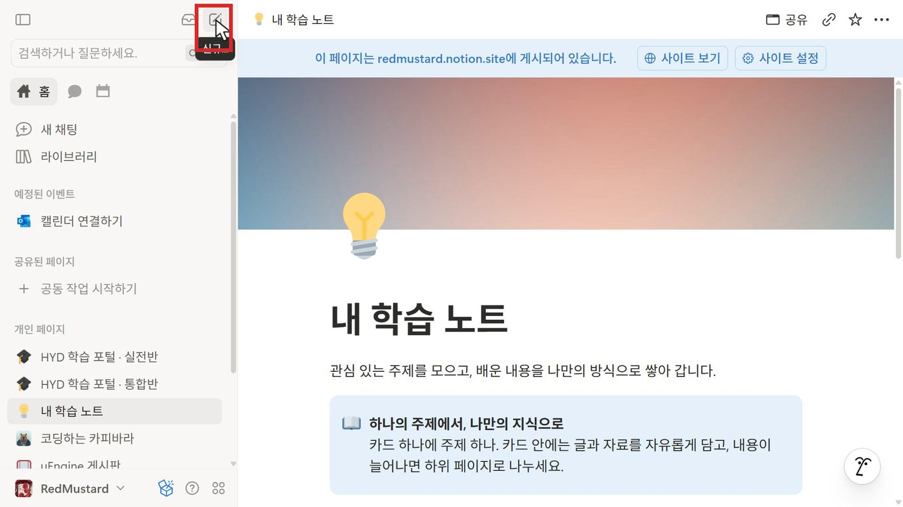
열린 메뉴에서 페이지를 고르세요.
이렇게 합니다메뉴의 페이지 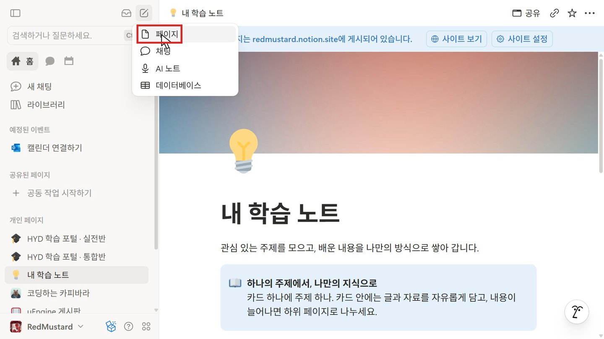
빈 페이지가 열립니다. 맨 위 큰 글씨 칸에 흐리게 새 페이지라고 적혀 있습니다. 그 칸을 누르고 아래 제목을 넣으세요.
이렇게 됩니다새로 열린 빈 페이지의 제목 칸 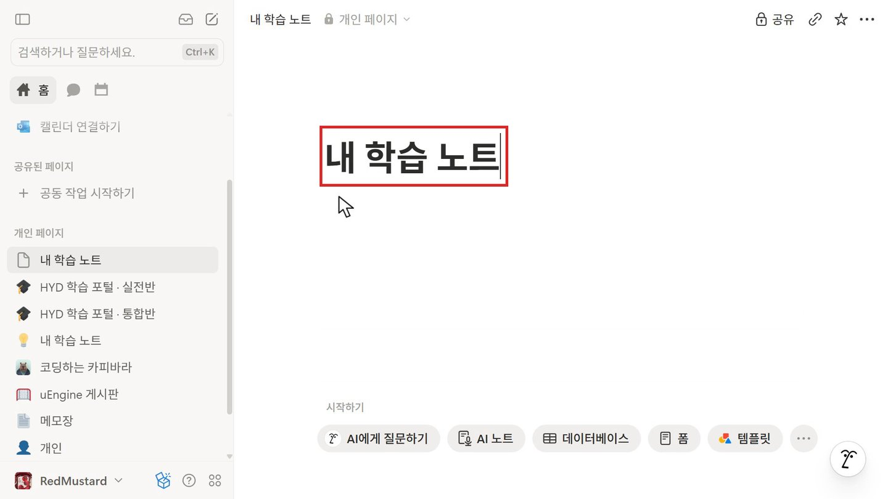
내 학습 노트
확인큰 제목이 내 학습 노트로 바뀌고, 왼쪽 목록의 새 페이지도 같은 이름이 됩니다.
다음 단계 →2단계아이콘 붙이기
페이지가 많아지면 이름만으로는 찾기 어려우니, 한눈에 알아볼 그림을 붙입니다.
제목 위에 마우스를 올리면 아이콘 추가 · 커버 추가 · 댓글 추가가 나옵니다. 아이콘 추가를 누르세요.
이렇게 합니다제목 위의 아이콘 추가 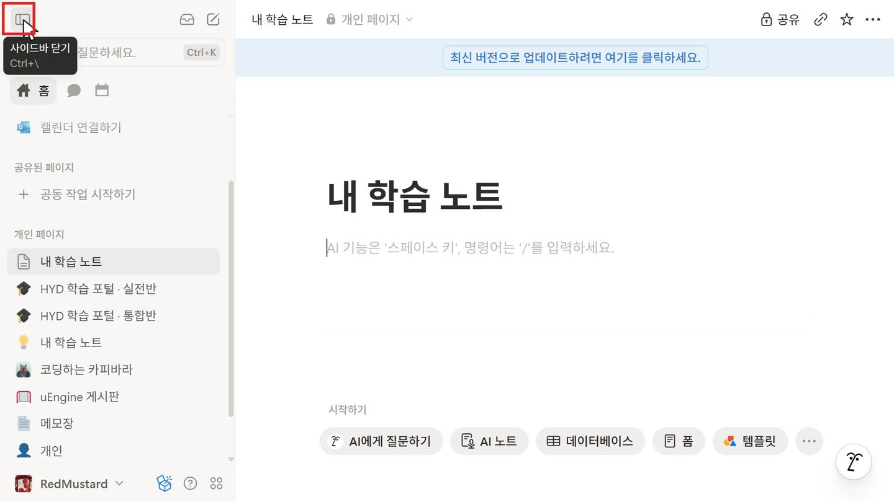
제목 위에 아무 이모지가 먼저 하나 붙고, 이모지를 고르는 창이 열립니다. 검색 칸에
공책을 치면 공책 이모지가 나옵니다. 그것을 누르세요. 마음에 드는 다른 이모지를 골라도 됩니다.이렇게 합니다공책으로 찾은 이모지 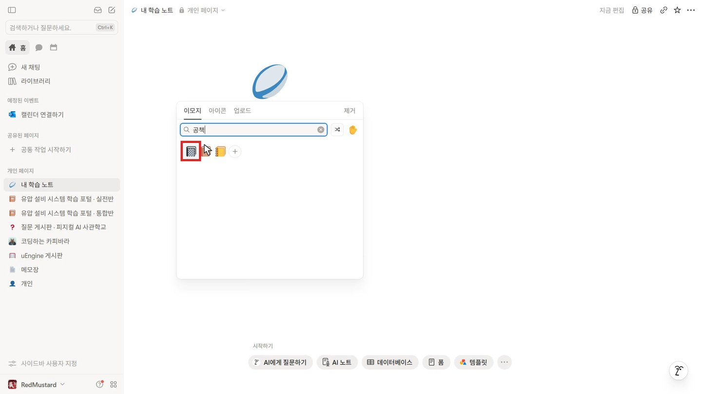
확인고른 이모지가 제목 위에 붙고 고르는 창이 닫힙니다(다음 단계 첫 사진).
다음 단계 →3단계커버 붙이기
커버는 페이지 맨 위에 까는 배경 그림입니다. 없어도 되지만, 열자마자 내 노트인 게 눈에 들어옵니다.
제목 위에 다시 마우스를 올리고 커버 추가를 누르세요.
이렇게 합니다제목 위의 커버 추가(붙은 이모지 아래) 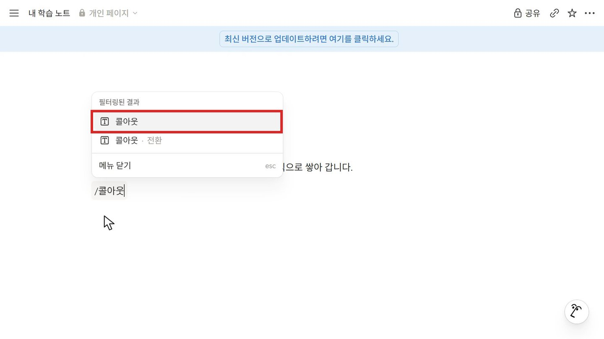
Notion이 아무 그림이나 하나 넣어 줍니다. 다른 그림으로 바꾸려면 커버에 마우스를 올리고 오른쪽 위 변경하기를 누르세요.
이렇게 합니다커버 오른쪽 위 막대의 변경하기(맨 왼쪽) 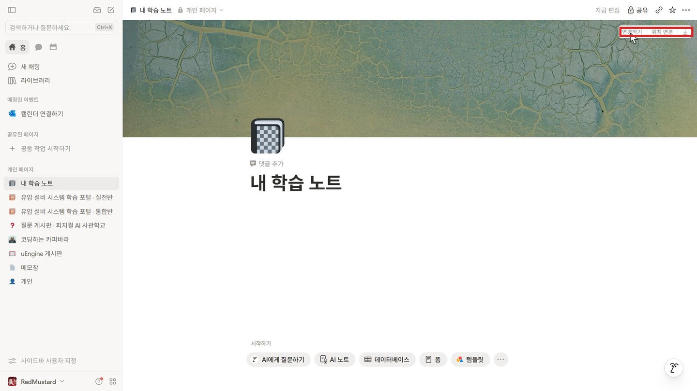
그림을 고르는 창이 열리면 마음에 드는 그림을 누르세요. 사진은 흐릿한 반투명 유리를 골랐습니다.
이렇게 합니다그림 고르는 창의 흐릿한 반투명 유리 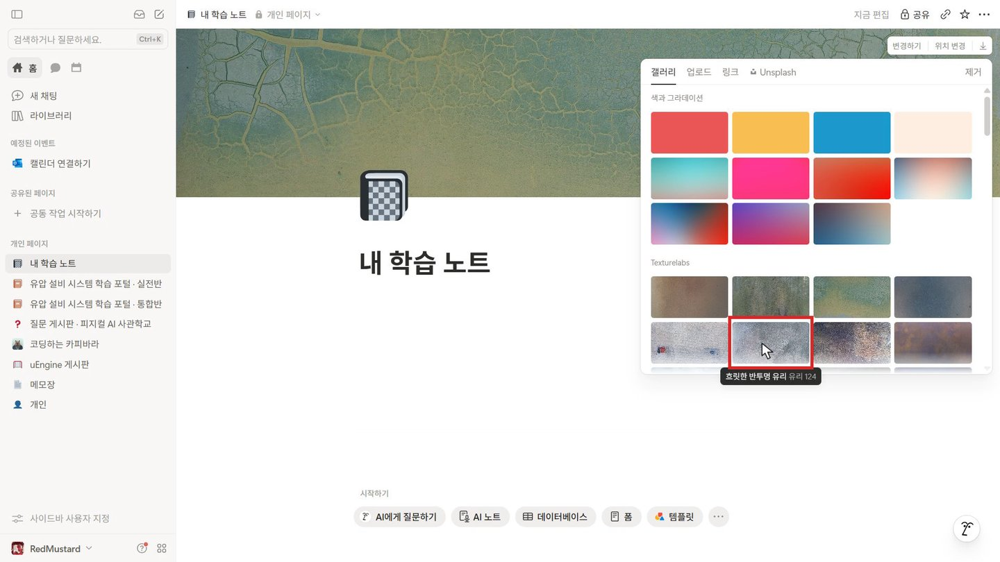
커버가 바뀌면 제목 끝을 누르고 Enter를 누르세요. 제목 아래 본문 첫 줄로 내려갑니다.
확인맨 위에 커버, 그 아래 이모지와 제목이 있고, 커서가 제목 아래 줄에 있습니다.
다음 단계 →4단계홈의 소개 적기
따로 저장 버튼은 없고, 적는 대로 저절로 저장됩니다.
왼쪽 목록에 방금 적은 내 학습 노트가 들어와 있습니다.
여기를 봅니다왼쪽 목록에 들어온 내 학습 노트 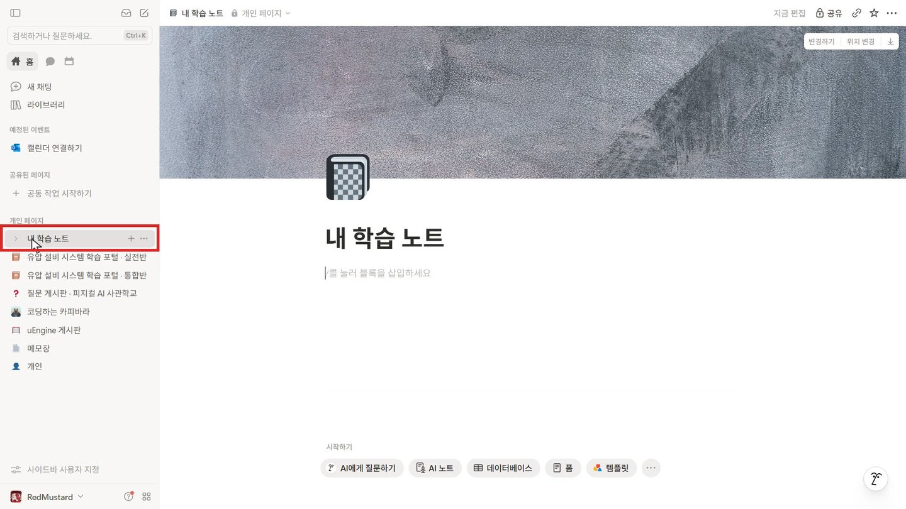
본문을 넓게 쓰려면 목록 위 왼쪽 끝 단추(사이드바 닫기)를 눌러 목록을 접으세요. 다시 펼칠 때도 같은 자리를 누릅니다.
이렇게 합니다목록 위 사이드바 닫기 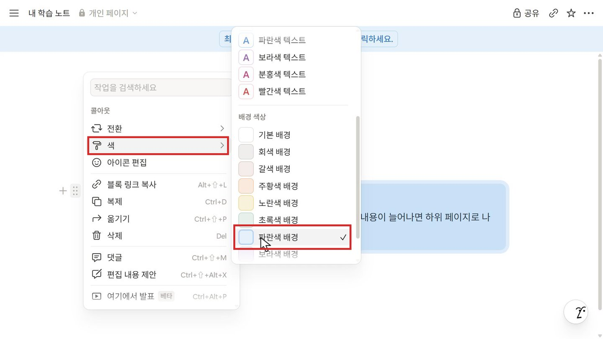
이 페이지는 노트를 열면 맨 먼저 보게 될 화면이라, 앞으로 홈이라고 부릅니다. 제목 아래 빈 줄에 아래 소개를 넣고 Enter를 두 번 누르세요. 다음 내용과 붙어 보이지 않게 빈 줄을 하나 두는 것이고, 앞으로도 내용이 바뀌는 곳은 이렇게 한 줄 띄웁니다.
관심 있는 주제를 모으고, 배운 내용을 나만의 방식으로 쌓아 갑니다.
소개 문장 왼쪽에 마우스를 올리면 점 여섯 개짜리 손잡이가 나옵니다. Notion은 글 한 줄, 그림 하나를 한 덩어리씩 따로 다루는데, 이 덩어리를 블록이라고 합니다. 손잡이를 잡으면 블록을 통째로 옮기거나 모양을 바꿀 수 있습니다.
여기를 봅니다소개 왼쪽의 블록 손잡이 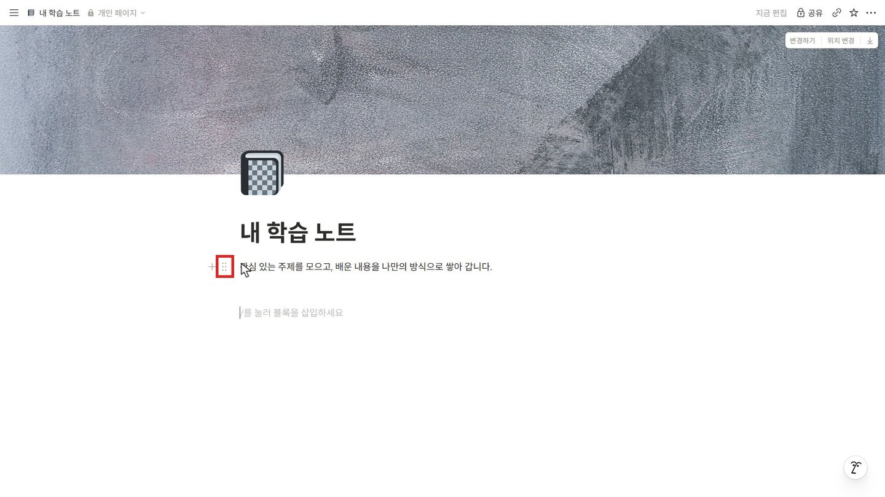
확인왼쪽 목록이 접혀 본문이 넓어졌고, 제목 아래에 소개와 빈 줄 하나가 있습니다.
다음 단계 →5단계안내 상자 만들기
노트를 어떻게 쓰는지는 열 때마다 먼저 보여야 하는데, 평범한 글 사이에 섞어 두면 잘 안 보입니다. 그래서 아이콘과 배경색이 붙은 안내 상자에 넣습니다. Notion에서는 이런 상자를 콜아웃이라고 부릅니다.
빈 줄에서
/(슬래시)를 치면 넣을 수 있는 블록 메뉴가 열립니다. 이어서콜아웃을 치면 메뉴에 콜아웃만 남습니다. 맨 위 콜아웃을 고르세요.이렇게 합니다콜아웃만 남은 블록 메뉴 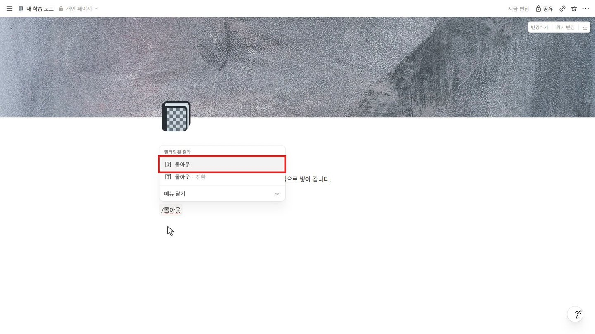
아이콘이 붙은 빈 상자가 생깁니다. 첫 줄은 이름표처럼 굵게 씁니다. Ctrl+B를 누르고 아래 첫 줄을 넣은 뒤, Ctrl+B를 한 번 더 눌러 보통 글씨로 돌리세요.
이렇게 됩니다새로 생긴 빈 안내 상자 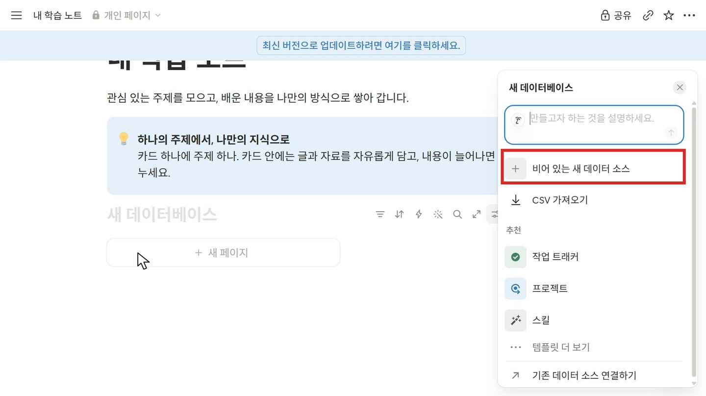
하나의 주제에서, 나만의 지식으로
Enter를 누르면 상자 안에 줄이 하나 더 생깁니다. 그 줄에 설명을 넣으세요.
카드 하나에 주제 하나. 카드 안에는 글과 자료를 자유롭게 담고, 내용이 늘어나면 하위 페이지로 나누세요.
이렇게 됩니다굵은 첫 줄과 설명이 든 상자 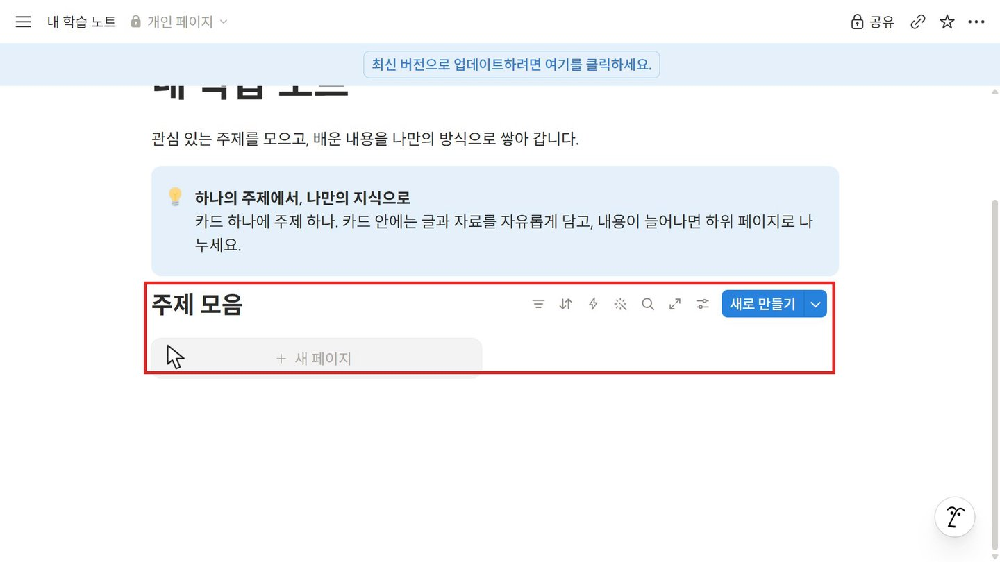
확인상자 안에 굵은 첫 줄과 보통 글씨 설명이 따로 있습니다.
다음 단계 →6단계상자에 파란색 넣기
처음 만든 상자는 회색으로 나옵니다. 사진의 상자는 앞서 하던 작업 때문에 이미 파란색이지만, 하는 방법은 같습니다.
상자 왼쪽 손잡이를 누르세요. 메뉴가 열린 채로
파란색 배경을 치면 배경 색상 아래 파란색 배경이 나옵니다. 그것을 누르세요.이렇게 합니다손잡이 메뉴에서 찾은 파란색 배경 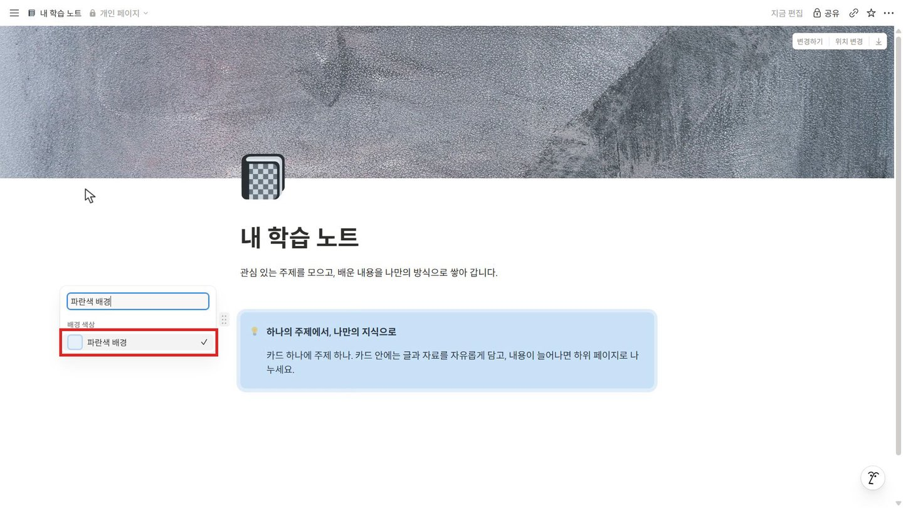
메뉴가 닫히고 상자 바탕에 연한 파란색이 들어갑니다.
이렇게 됩니다파란색이 들어간 안내 상자 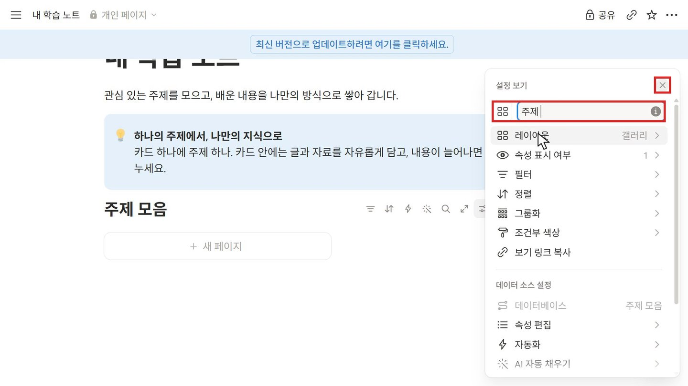
확인상자 바탕이 연한 파란색입니다.
다음 단계 →주제 모음 만들기와 첫 주제 열기
7단계주제 모음 만들기
앞으로 늘어날 주제를 홈에서 골라 열 수 있게, 주제를 한데 모아 둘 목록을 만듭니다. 그림이 붙은 카드로 늘어놓으면 고르기 쉬우니 카드 모양으로 만듭니다.
상자 마지막 문장 끝을 누르고 Enter를 두 번 누르세요. 한 번 누르면 상자 안에 빈 줄이 생기고, 한 번 더 누르면 상자 밖 보통 줄로 나옵니다. 여기는 안내와 목록이 갈리는 자리라 Enter를 두 번 더 눌러 두 줄 띄웁니다.
빈 줄에서
/갤러리를 치고 갤러리 보기를 고르세요.이렇게 합니다블록 메뉴의 갤러리 보기 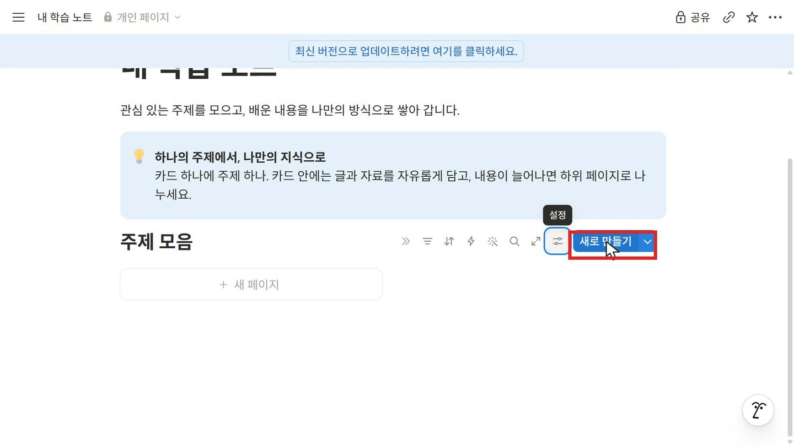
빈 목록이 생기고, 아직은 + 새 페이지 자리 하나만 보입니다. 주제를 넣으면 여기에 카드가 한 장씩 늘어나는데, 목록을 이렇게 카드로 늘어놓아 보여 주는 모양을 갤러리라고 합니다. Notion은 페이지를 모아 두는 이런 목록을 데이터베이스라고 부르는데, 이 가이드에서는 목록이라고 부릅니다. 오른쪽에 새 데이터베이스 창이 함께 떠도 그대로 두세요. 목록 위쪽에 흐리게 적힌 새 데이터베이스가 목록의 이름 칸입니다. 그곳을 누르고 아래 이름을 넣은 뒤 Enter를 누르세요.
이렇게 됩니다새로 생긴 빈 갤러리와 흐린 이름 칸 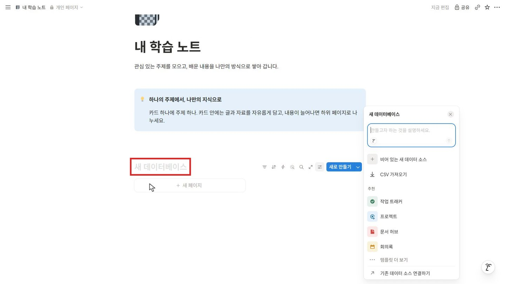
주제 모음
확인안내 상자 아래에 주제 모음이라는 이름의 빈 갤러리와 + 새 페이지 자리가 있습니다.
다음 단계 →8단계보기 이름 바꾸기
목록을 어떤 모양으로 보여 줄지 정해 둔 것을 보기라고 합니다. 뒤에서 같은 목록을 표 모양으로도 보는데, 그때 두 모양을 이름으로 가려 부를 수 있게 지금 이 카드 모양에도 이름을 붙입니다.
목록 이름이 주제 모음으로 바뀌었습니다. 목록 오른쪽 위 설정 단추를 누르세요(마우스를 올리면 설정이라고 뜹니다).
이렇게 합니다목록 오른쪽 위 설정 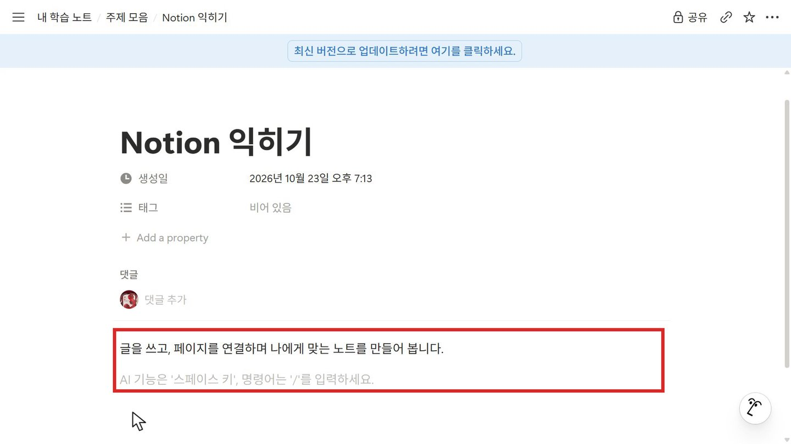
설정 보기 창 맨 위 칸에 갤러리 보기라고 적혀 있습니다. 그 글자를 지우고 아래 이름을 넣은 뒤 Enter를 누르세요.
주제 카드
이렇게 됩니다설정 보기 창 맨 위의 보기 이름 칸 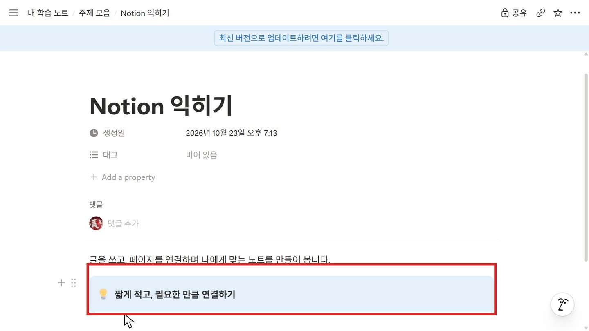
주제 카드가 이 보기의 이름이고, 왼쪽 위에 크게 적은 주제 모음은 목록 자체의 이름입니다. 보기가 하나뿐일 때는 보기 이름이 화면에 따로 보이지 않다가, 보기를 하나 더 만들면 나란히 나타납니다. 창 오른쪽 위 X(닫기)를 누르세요.
이렇게 합니다설정 보기 창의 닫기(X) 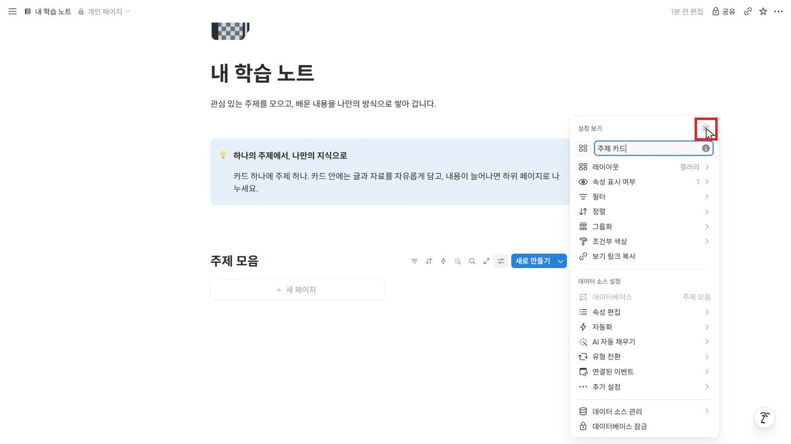
확인창이 닫히고 주제 모음 갤러리가 보입니다. 보기가 하나뿐이라 보기 이름 주제 카드는 아직 화면에 따로 보이지 않습니다.
다음 단계 →9단계첫 주제 열기
카드를 한 장 넣습니다. 첫 주제에는 오늘 써 보는 Notion 기능들을 모읍니다.
주제 모음 오른쪽 파란 새로 만들기를 누르세요.
이렇게 합니다주제 모음의 새로 만들기 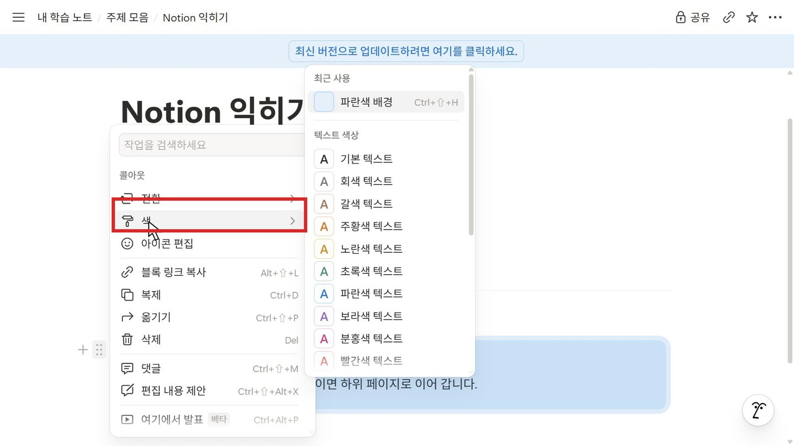
새 주제가 화면 가운데 작은 창으로 열립니다. 잠깐 들여다볼 때 쓰는 좁은 창이라, 왼쪽 위 전체 페이지로 열기를 눌러 넓게 여세요.
이렇게 합니다가운데 창의 전체 페이지로 열기 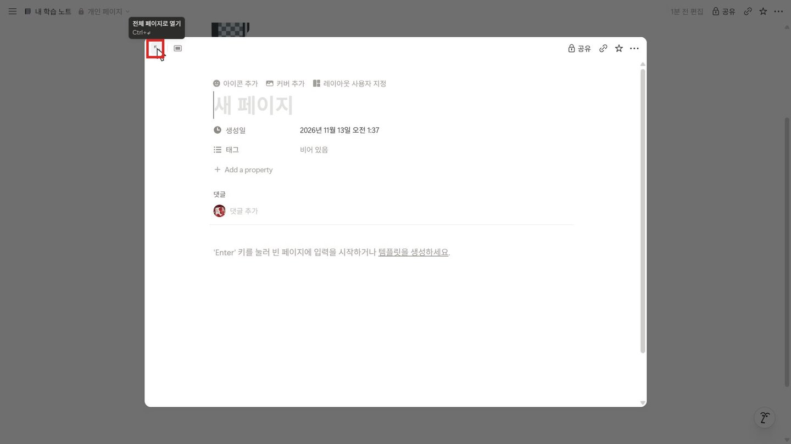
넓은 페이지로 바뀌고 위쪽 경로가 내 학습 노트 / 주제 모음 / 새 페이지가 됩니다. 제목 칸에 아래 이름을 넣으세요(Notion 부분만 영어로 씁니다).
이렇게 됩니다넓게 열린 새 주제의 제목 칸 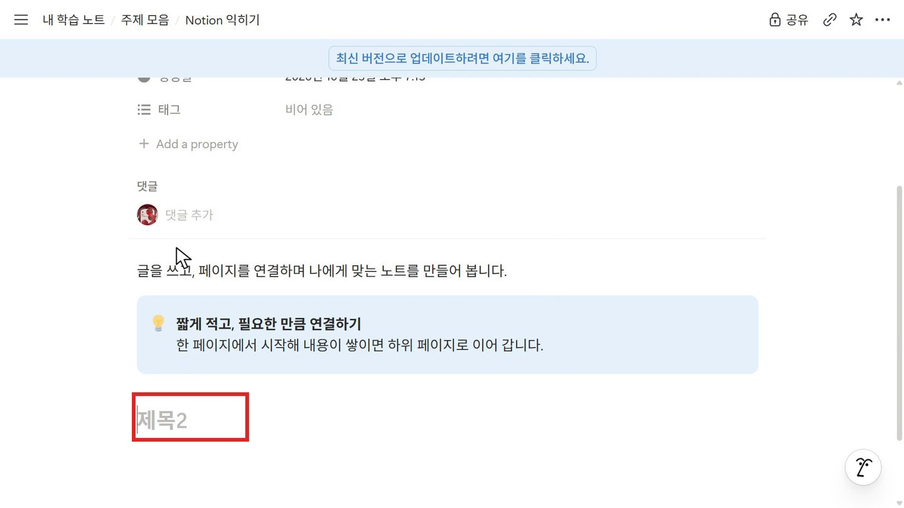
Notion 익히기
제목 위 아이콘 추가로 이모지도 하나 붙이세요(사진은
연필로 찾은 이모지). 이 이모지는 홈의 카드에도 똑같이 나옵니다. 제목 밑의 생성일, 태그 같은 칸은 목록에 든 페이지라서 Notion이 처음부터 넣어 둔 칸입니다. 뒤에서 다루니 지금은 그대로 두세요.여기를 봅니다제목 밑의 생성일 · 태그 칸 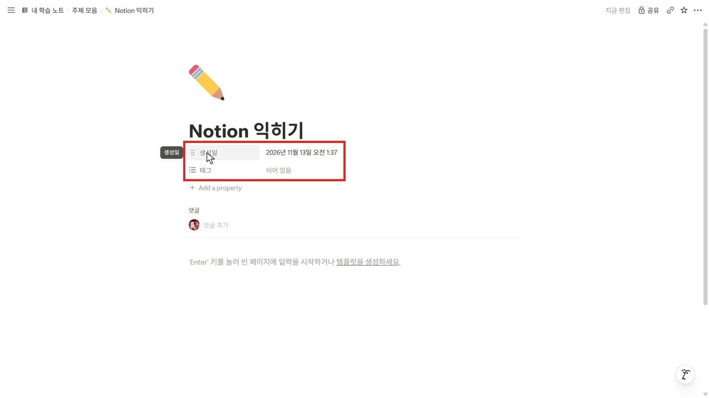
그 아래 댓글 칸 밑의 흐린 줄('Enter' 키를 눌러 빈 페이지에 입력을 시작하거나…)을 누르고 아래 소개를 넣은 뒤 Enter를 두 번 눌러 한 줄 띄우세요. 카드 한 장도 열어 보면 글을 적는 평범한 페이지입니다.
글을 쓰고, 페이지를 연결하며 나에게 맞는 노트를 만들어 봅니다.
확인Notion 익히기 페이지에 이모지, 생성일 · 태그 칸, 소개가 있습니다.
다음 단계 →10단계주제의 안내 상자
주제마다 맨 위에 그 주제를 어떻게 채워 갈지 적어 두면, 열 때마다 길잡이가 됩니다.
빈 줄에서
/콜아웃을 쳐서 나온 콜아웃을 누르세요. 메뉴 위쪽에 앞서 쓴 콜아웃이 떠 있으면 그것을 눌러도 됩니다.이렇게 합니다블록 메뉴의 콜아웃 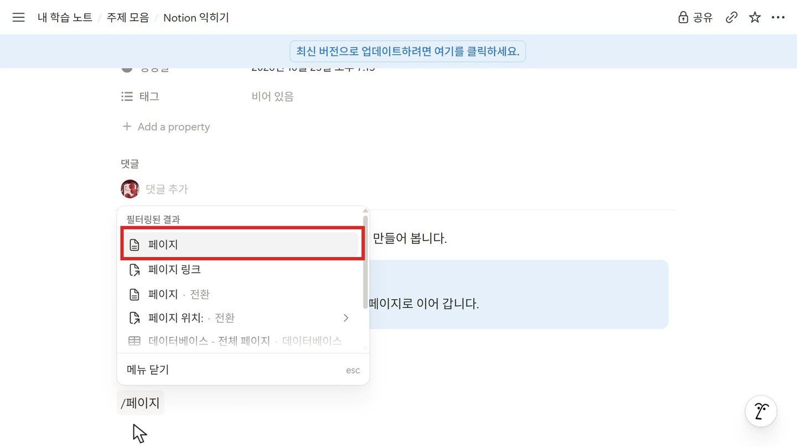
이번 상자는 처음부터 파란색으로 나옵니다. Notion이 바로 앞에 쓴 색을 새 상자에도 이어 주니, 색은 따로 바꾸지 않아도 됩니다. 첫 줄은 Ctrl+B로 굵게 적고, 굵게를 푼 뒤 Enter를 누르고 설명을 넣으세요.
짧게 적고, 필요한 만큼 연결하기
한 페이지에서 시작해 내용이 쌓이면 하위 페이지로 이어 갑니다.
이렇게 됩니다파란색으로 나온 주제 안내 상자 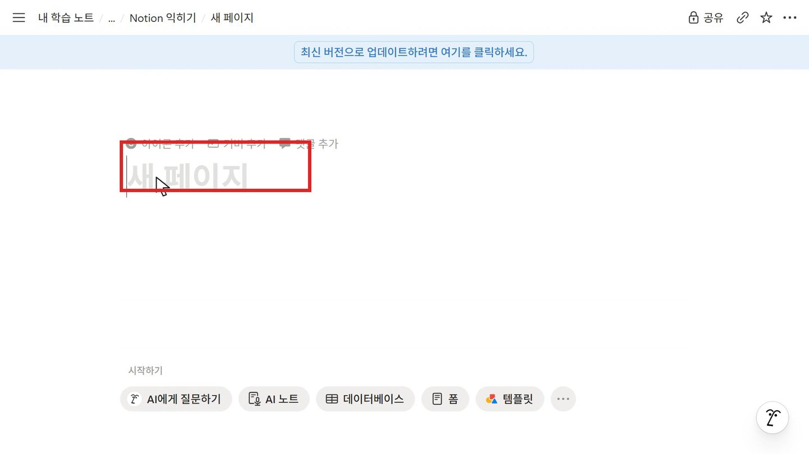
확인소개 아래 한 줄 띄운 자리에 파란 안내 상자가 있고, 굵은 첫 줄과 설명이 들어 있습니다.
다음 단계 →구역 제목과 하위 페이지
11단계구역 제목 넣기
한 주제에 이것저것 다 적으면 페이지가 금방 길어지니, 내용이 늘면 이 주제 안에 페이지를 따로 만들어 나눠 담습니다. 먼저 그 페이지들을 묶을 구역 제목을 넣습니다. 구역을 나눌 때는 중간 크기 제목인 제목 2가 알맞습니다.
상자 마지막 문장 끝에서 Enter를 두 번 눌러 상자 밖으로 나오고, Enter를 한 번 더 눌러 한 줄 띄우세요.
##(샵 두 개)을 치고 스페이스를 누르면 흐린 제목2 자리가 생깁니다. 메뉴를 열지 않고 바꾸는 단축키입니다.이렇게 됩니다샵 두 개와 스페이스로 생긴 제목2 자리 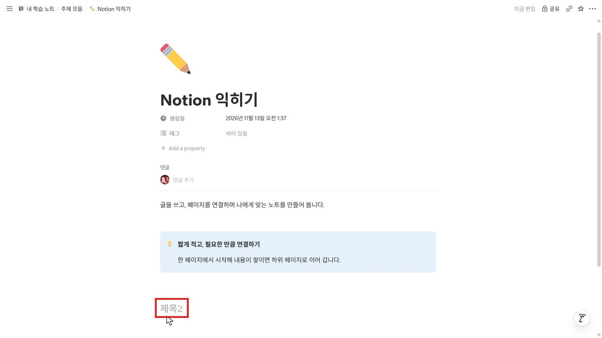
그 자리에 아래 제목을 넣고 Enter를 누르세요.
나의 페이지
이렇게 됩니다나의 페이지 제목과 그 아래 빈 줄 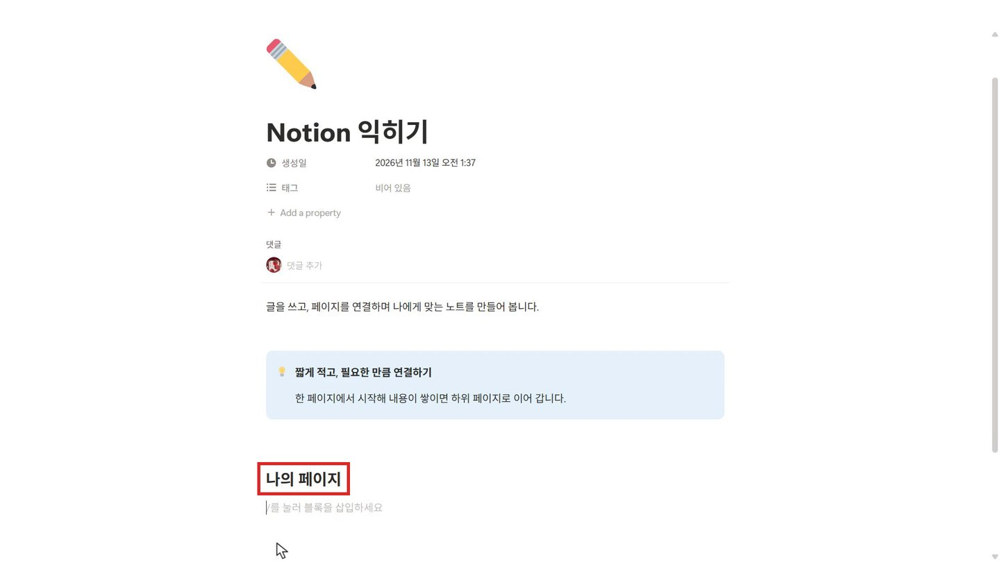
확인안내 상자 아래 한 줄 띄운 자리에 나의 페이지 제목이 있고, 그 아래에 빈 줄이 있습니다.
다음 단계 →12단계첫 하위 페이지 만들기
첫 페이지는 글 모양을 바꾸는 방법을 직접 써 보며 모아 두는 곳입니다.
나의 페이지 아래 빈 줄에서
/페이지를 치고, 메뉴 맨 위 페이지를 고르세요.이렇게 합니다블록 메뉴의 페이지 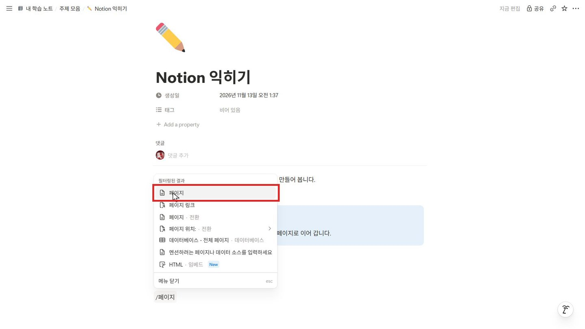
고르면 새 페이지가 곧바로 열립니다. 위쪽 경로 끝에 새 페이지가 붙고, 큰 제목 칸이 비어 있습니다. 제목 칸에 아래 이름을 넣고 이모지를 하나 붙이세요(사진은
팔레트로 찾은 이모지).이렇게 됩니다곧바로 열린 빈 하위 페이지 첫 페이지 꾸미기
위쪽 줄은 지금 페이지가 어디에 있는지 알려 주는 경로입니다. Notion 익히기 다음에 첫 페이지 꾸미기가 있습니다. 홈에 카드가 한 장 늘어난 것이 아니라, 이 주제 안에 페이지가 하나 생긴 것입니다. 이렇게 안에 든 페이지를 하위 페이지, 바깥 페이지를 부모 페이지라고 합니다. 부모로 돌아갈 때는 경로에서 그 이름을 누릅니다. 지금은 이 페이지부터 채웁니다.
여기를 봅니다경로의 Notion 익히기 / 첫 페이지 꾸미기 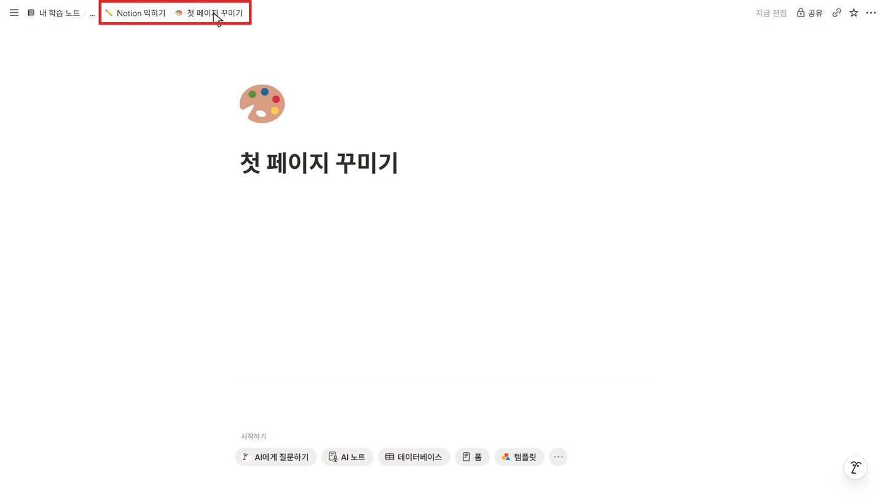
확인경로가 내 학습 노트 / … / Notion 익히기 / 첫 페이지 꾸미기이고, 제목 위에 이모지가 있습니다.
다음 단계 →13단계제목과 글머리 목록
이 페이지에는 글 모양을 바꾸는 방법을 하나씩 써 보며 남깁니다.
제목에서 Enter를 누르고 아래 소개를 넣은 뒤, Enter를 두 번 눌러 한 줄 띄우세요.
한 페이지 안에서도 글의 모양을 바꾸어 읽기 쉽게 정리할 수 있습니다.
##스페이스로 제목 2를 만들어 아래 제목을 넣고 Enter를 누르세요.오늘 써 본 방법
항목을 하나씩 늘어놓을 때는 줄 앞에 점이 붙는 글머리 기호 목록이 편합니다.
-(하이픈)을 치고 스페이스를 누르면 앞에 점이 생기고 흐린 리스트 자리가 나옵니다.이렇게 됩니다하이픈과 스페이스로 생긴 점 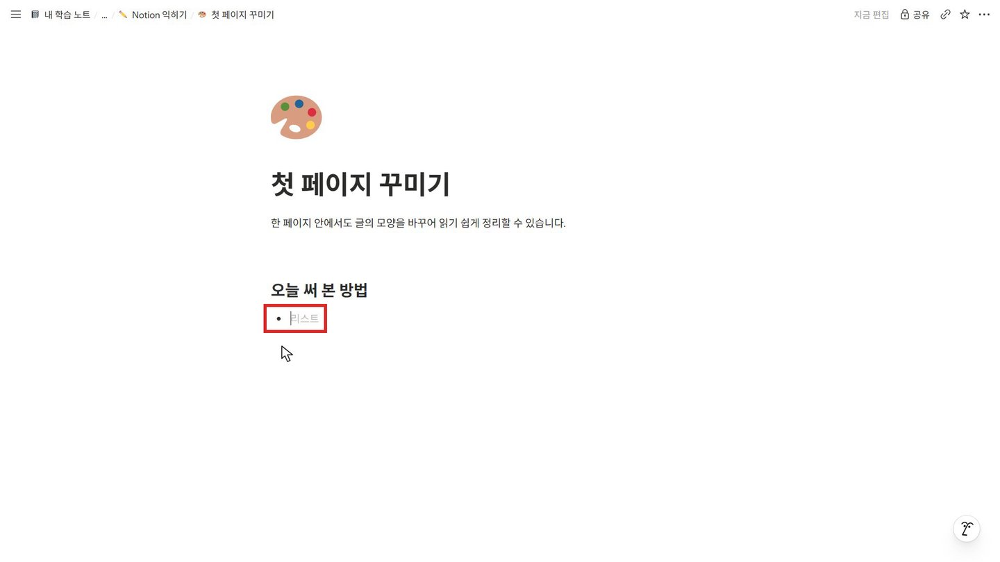
아래 세 항목을 차례로 넣으세요. 항목마다 Enter를 누르면 다음 점이 생깁니다.
제목으로 내용의 구획 나누기
같은 성격의 내용은 목록으로 정리하기
긴 설명은 토글 안에 접어 두기
목록을 끝낼 때는 마지막 항목 끝에서 Enter를 두 번 누릅니다. 한 번 누르면 빈 점이 하나 더 생기고, 거기서 한 번 더 누르면 점이 없는 보통 줄로 돌아옵니다.
이렇게 됩니다세 항목 목록과 그 아래 보통 줄 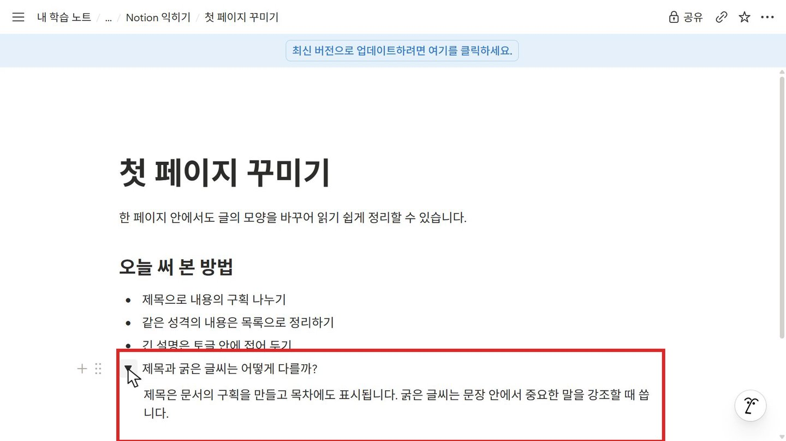
확인오늘 써 본 방법 아래에 세 항목이 점 목록으로 있고, 그 아래 줄은 점이 없는 보통 줄입니다.
다음 단계 →긴 설명 토글 · 다음에 할 일 · 목차
14단계긴 설명을 토글로 접기
제목과 굵은 글씨를 둘 다 써 봤으니, 둘이 어떻게 다른지 질문과 답으로 남깁니다. 토글은 접었다 펼 수 있는 줄이라, 평소엔 질문만 보이고 답은 궁금할 때 펼쳐 봅니다.
보통 줄에서
>(오른쪽 꺾쇠, 부등호)를 치고 스페이스를 누르면 앞에 삼각형이 붙은 토글이 생깁니다. 삼각형 옆에 아래 질문을 넣으세요.제목과 굵은 글씨는 어떻게 다를까?
토글은 처음부터 펼쳐져 있어서, 질문 아래 안쪽에 빈 토글입니다라는 흐린 글이 보입니다.
이렇게 됩니다펼쳐진 토글과 그 안쪽 빈 자리 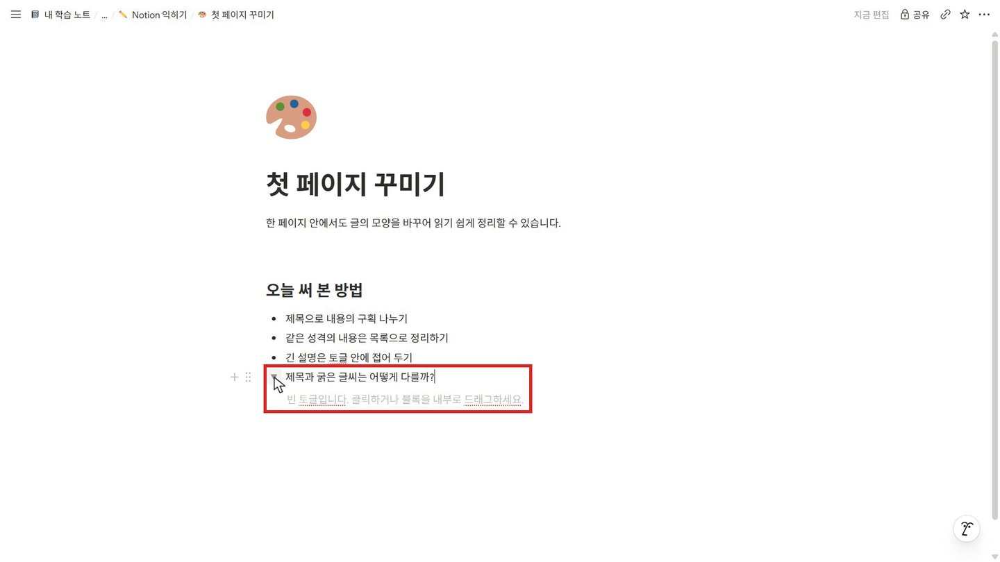
그 안쪽 빈 곳을 누르고 아래 설명을 넣으세요. 두 문장 사이는 한 칸 띄웁니다.
제목은 문서의 구획을 만들고 목차에도 표시됩니다. 굵은 글씨는 문장 안에서 중요한 말을 강조할 때 씁니다.
이렇게 됩니다토글 안쪽의 설명 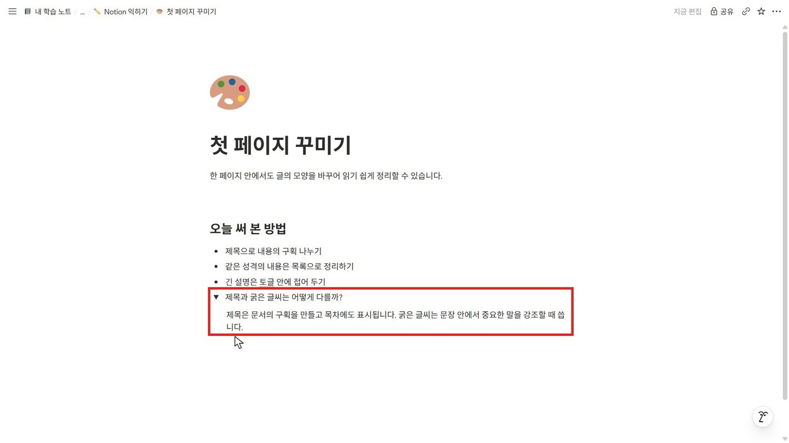
확인삼각형 옆에 질문이 있고, 그 안쪽에 설명이 있습니다.
다음 단계 →15단계접기와 펼치기, 토글 밖으로 나오기
접는다고 적어 둔 답이 지워지지는 않습니다.
질문 앞 삼각형을 누르면 답은 숨고 질문만 남습니다. 한 번 더 누르면 적어 둔 답이 그대로 나옵니다. 확인했으면 다시 접어 두세요.
이렇게 됩니다접혀서 질문만 남은 토글 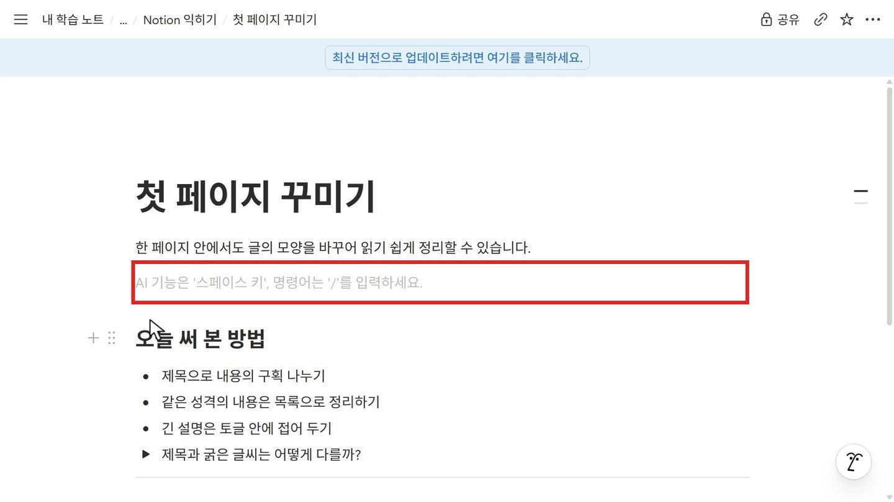
토글 밖으로 나올 때는 질문 끝을 누르고 Enter를 누르세요. 그 아래에 흐린 토글 글이 붙은 빈 토글이 하나 생깁니다.
이렇게 됩니다질문 끝 Enter로 생긴 빈 토글 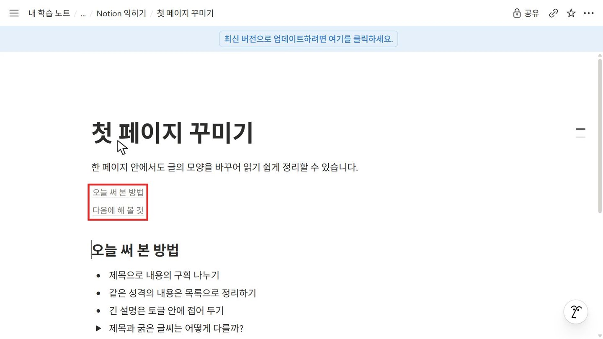
그 자리에서 Backspace를 한 번 누르면 삼각형이 없어지고 보통 줄로 바뀝니다.
이렇게 됩니다보통 줄로 바뀐 자리 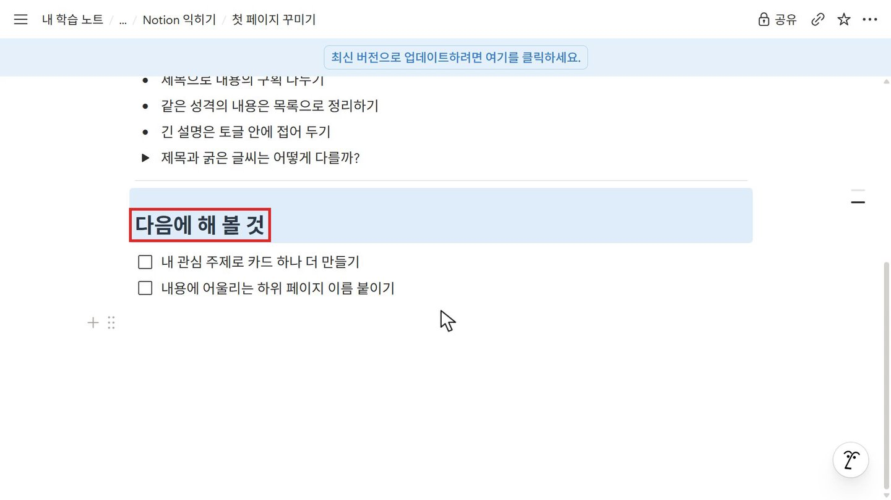
확인접힌 토글에는 질문만 보이고, 그 아래 줄은 삼각형이 없는 보통 줄입니다.
다음 단계 →16단계구분선과 할 일 목록
이 밑에는 다음에 해 볼 일을 남깁니다. 내용이 바뀌는 곳이니 먼저 선을 긋습니다.
보통 줄에서
---(하이픈 세 개)를 치면 가로선이 생깁니다.이렇게 됩니다하이픈 세 개로 생긴 가로선 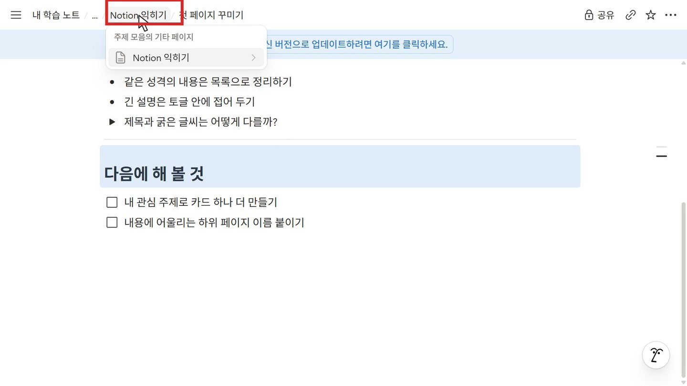
그 밑에 제목 2로 아래 제목을 넣고 Enter를 누르세요.
다음에 해 볼 것
할 일은 했는지 안 했는지 표시할 수 있어야 쓸모가 있으니, 점 대신 체크 상자가 붙는 목록으로 적습니다.
[](대괄호를 열고 닫기)를 치고 스페이스를 누르면 앞에 네모가 생깁니다. 아래 두 항목을 넣고 Enter 두 번으로 목록을 끝내세요. 이런 목록은 주제에 따라 필요할 때만 넣으면 됩니다.내 관심 주제로 카드 하나 더 만들기
내용에 어울리는 하위 페이지 이름 붙이기
이렇게 됩니다다음에 해 볼 것과 두 할 일 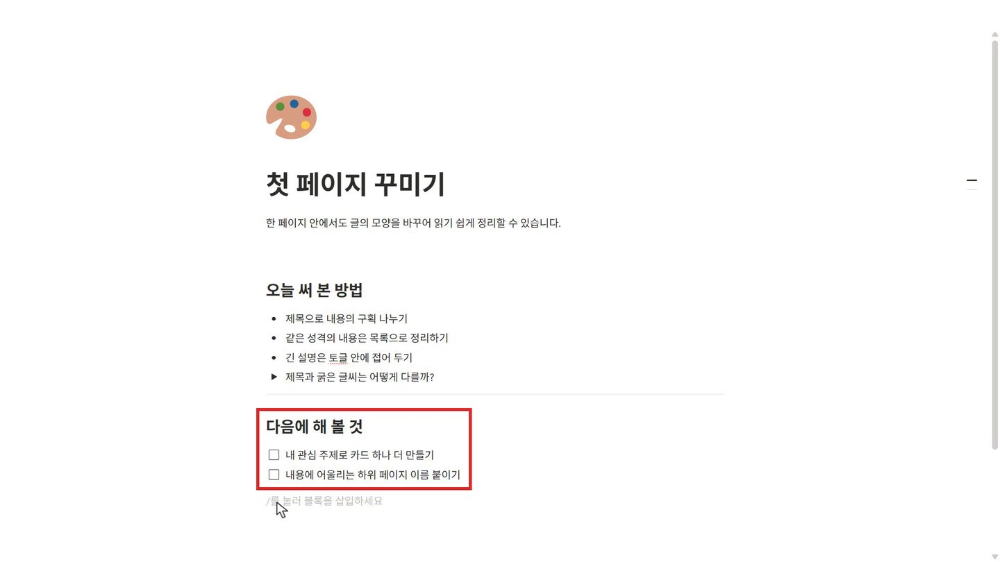
확인가로선 아래 다음에 해 볼 것 제목과 체크 상자가 붙은 두 항목이 있습니다.
다음 단계 →17단계목차로 필요한 곳 찾기
이 페이지에 제목이 두 개 생겼습니다. 제목들을 맨 위에 모아 두고, 누르면 그 자리로 가게 해 주는 것이 목차입니다.
페이지 위쪽 소개 문장 끝을 누르고 Enter를 두 번 눌러 한 줄 띄운 뒤,
/목차를 쳐서 목차를 고르세요. 두 제목이 목차에 들어옵니다. 따로 적지 않아도 제목 블록을 따라 저절로 만들어집니다.이렇게 됩니다두 제목이 들어온 목차 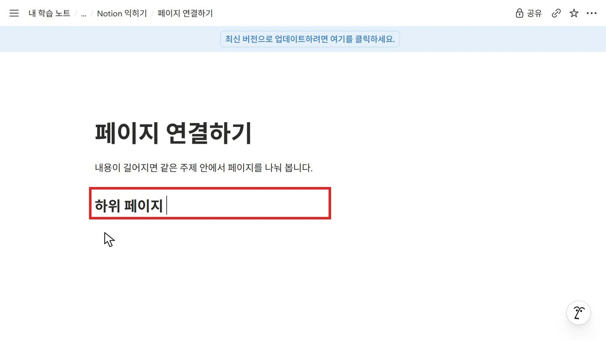
목차의 다음에 해 볼 것을 누르면 그 제목 자리로 내려가고, 제목에 잠깐 파란 바탕이 깔립니다. 지금은 짧아서 티가 덜 나지만, 내용이 쌓일수록 쓸모가 커집니다.
이렇게 됩니다목차로 찾아간 제목 자리 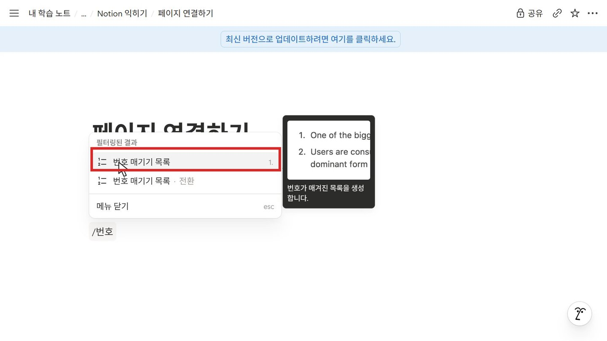
확인목차에 오늘 써 본 방법과 다음에 해 볼 것이 있고, 누르면 그 제목으로 이동합니다.
다음 단계 →번호 목록과 도움말 링크
18단계두 번째 하위 페이지
페이지끼리 잇는 법은 새 페이지에 따로 담습니다. 이 페이지도 같은 주제 안에 두려면 부모 페이지에서 만들어야 합니다.
위쪽 경로에서 Notion 익히기를 누르세요. 마우스를 올리면 작은 목록이 뜨지만, 그대로 이름을 누르면 됩니다.
이렇게 합니다경로의 Notion 익히기 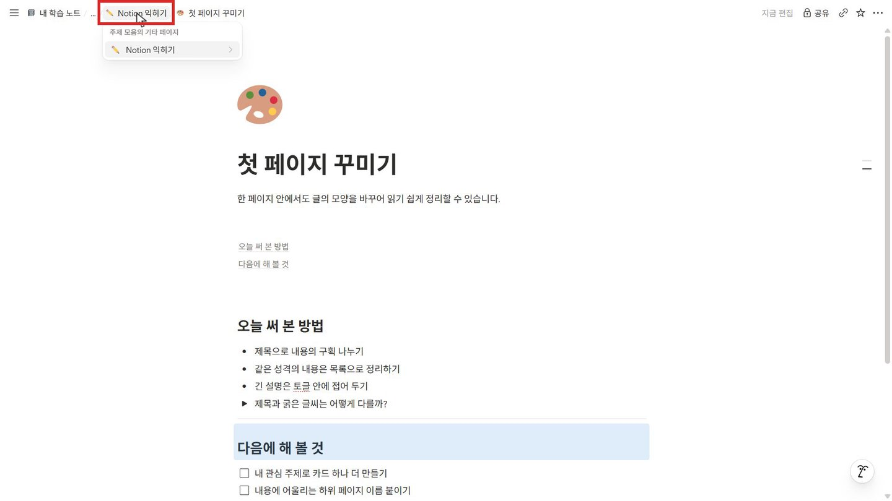
부모 페이지로 돌아옵니다. 나의 페이지 밑에 첫 페이지 꾸미기가 한 줄로 놓여 있습니다. 하위 페이지는 부모 페이지에 이렇게 한 줄로 보이고, 이 줄을 누르면 그 페이지가 열립니다.
이렇게 됩니다부모 페이지에 한 줄로 놓인 첫 페이지 꾸미기 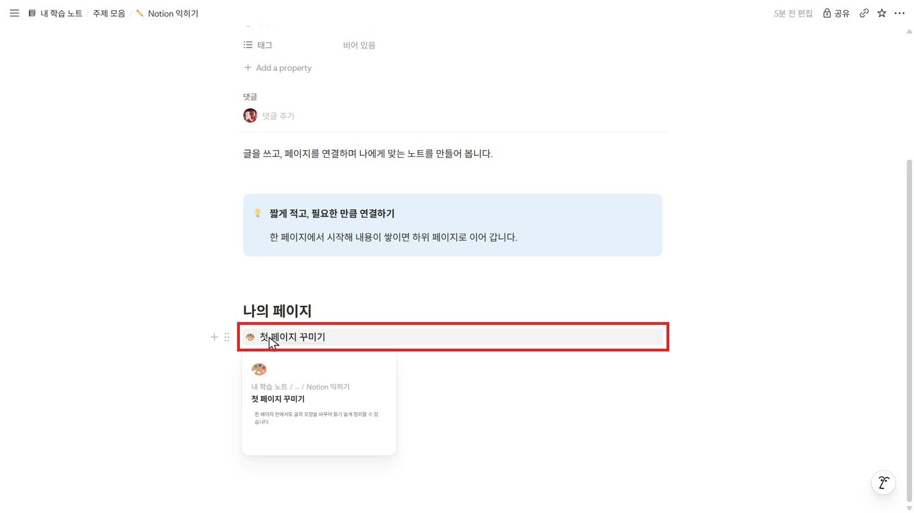
나의 페이지 제목 끝을 누르고 Enter를 누른 뒤,
/페이지를 쳐서 메뉴 맨 위 페이지를 고르세요. 새 줄은 첫 페이지 꾸미기 위에 생깁니다.이렇게 합니다나의 페이지 밑에서 연 블록 메뉴의 페이지 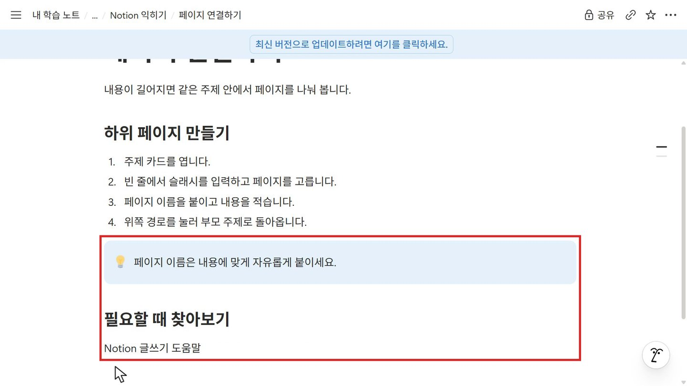
새 페이지가 열리면 제목에 아래 이름을 넣고 이모지를 붙이세요(사진은
링크로 찾은 사슬 고리).이렇게 됩니다새로 열린 두 번째 하위 페이지 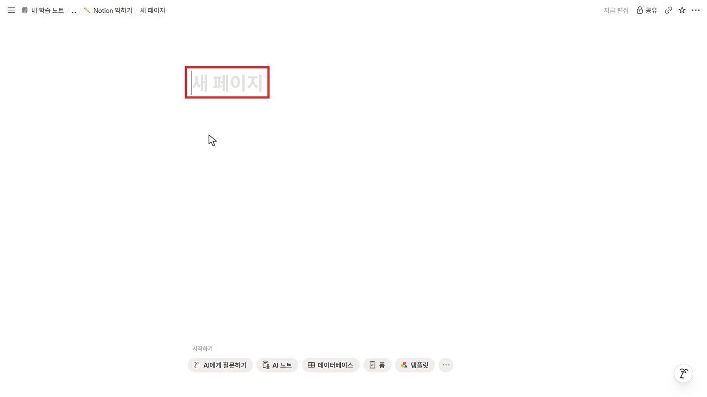
페이지 연결하기
제목에서 Enter를 누르고 아래 소개를 넣은 뒤, Enter를 두 번 눌러 한 줄 띄우세요. 제목 2로 아래 제목을 넣고 Enter를 누르세요.
내용이 길어지면 같은 주제 안에서 페이지를 나눠 봅니다.
하위 페이지 만들기
이렇게 됩니다페이지 연결하기의 소개와 제목 2 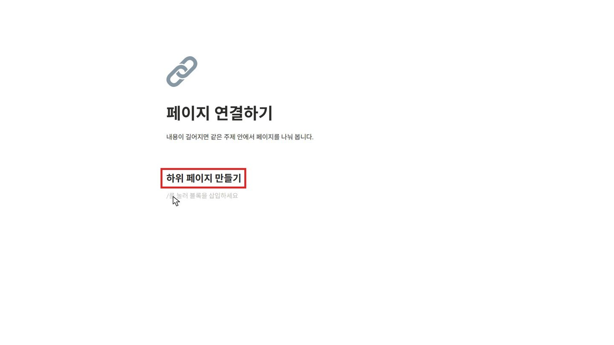
확인Notion 익히기 안에 만든 페이지 연결하기가 열려 있고, 소개와 하위 페이지 만들기 제목이 있습니다.
다음 단계 →19단계순서를 번호 목록으로 남기기
하위 페이지 만드는 순서는 차례대로 따라 하는 내용이라 번호가 붙는 목록이 좋습니다.
1.(숫자 1과 마침표)을 치고 스페이스를 누르면 앞에 1이 붙는 번호 매기기 목록이 됩니다.이렇게 됩니다숫자 1과 마침표로 생긴 번호 목록 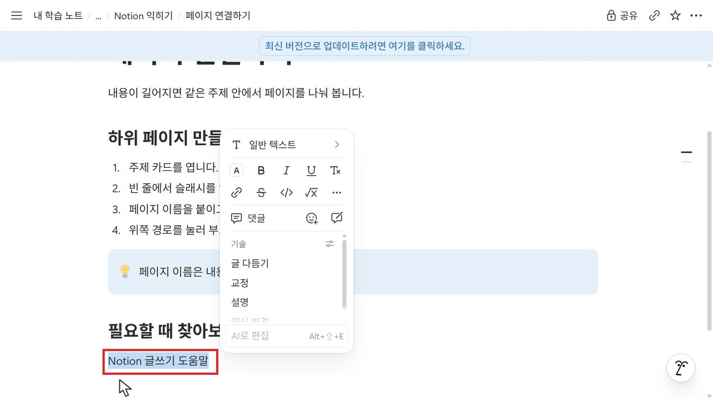
아래 네 항목을 차례로 넣으세요. Enter를 누르면 다음 번호가 이어집니다. 다 넣었으면 Enter 두 번으로 목록을 끝내세요.
주제 카드를 엽니다.
빈 줄에서 슬래시를 입력하고 페이지를 고릅니다.
페이지 이름을 붙이고 내용을 적습니다.
위쪽 경로를 눌러 부모 주제로 돌아옵니다.
Enter를 한 번 더 눌러 한 줄 띄우고, 이름을 어떻게 붙일지 망설일 때 볼 짧은 안내 상자를 넣으세요.
/콜아웃으로 상자를 만들고 아래 글을 넣습니다.페이지 이름은 내용에 맞게 자유롭게 붙이세요.
이렇게 됩니다번호 목록 네 항목과 안내 상자 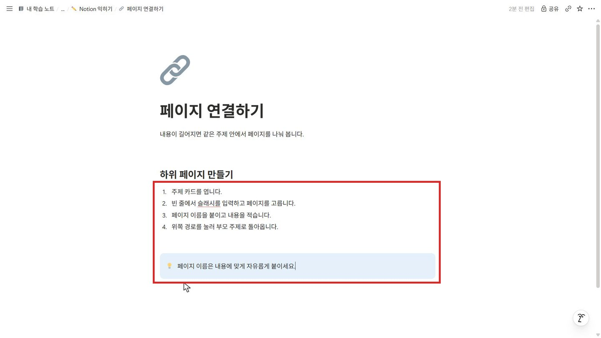
확인1부터 4까지 번호가 붙은 네 항목이 있고, 그 아래 한 줄 띄운 자리에 안내 상자가 있습니다.
다음 단계 →20단계도움말 출처 연결하기
기능을 오늘 다 외울 수는 없으니, 나중에 막힐 때 찾아볼 공식 도움말로 가는 길을 노트 안에 남깁니다. 주소를 그대로 붙여 두면 길기만 하고 무슨 링크인지 알기 어려우니, 알아보기 쉬운 이름을 먼저 적고 그 글자에 주소를 겁니다.
상자 마지막 줄에서 Enter 두 번으로 상자 밖으로 나와 한 줄 띄우고, 제목 2로 아래 제목을 넣은 뒤 Enter를 누르세요. 제목 밑에 링크를 걸 이름을 적으세요.
필요할 때 찾아보기
Notion 글쓰기 도움말
주소는 길어서 손으로 치기 어렵습니다. 아래 주소 블록의 복사를 누르고 Notion으로 돌아오세요.
https://www.notion.com/help/writing-and-editing-basics
방금 적은 Notion 글쓰기 도움말 글자를 마우스로 끌어 고르세요. 글자 위에 서식 막대가 떠도 그대로 두고 Ctrl+K를 누르세요.
이렇게 합니다끌어서 고른 링크 이름 글자 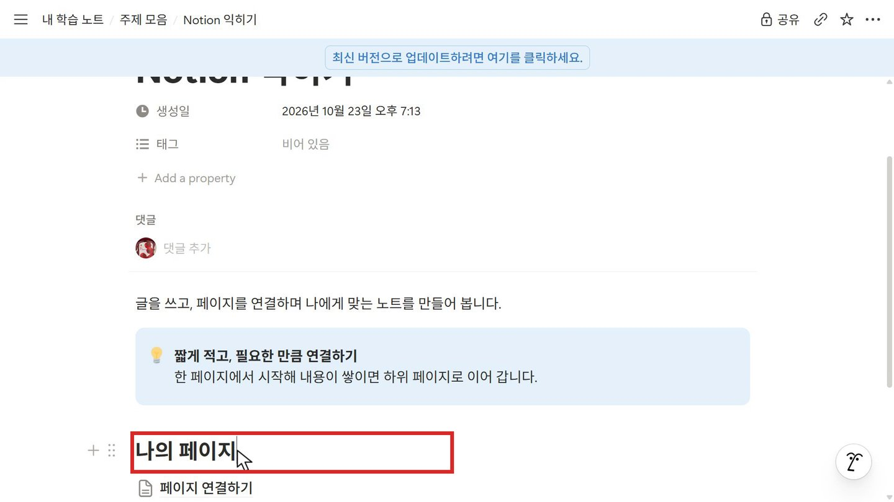
주소 칸이 열리면 복사한 주소를 붙여넣고 Enter를 누르세요.
이렇게 합니다링크 칸에 붙여넣은 주소 글자에 밑줄이 생기고, 마우스를 올리면 붙인 주소가 나옵니다. 이 글자를 누르면 그 도움말 페이지가 열립니다. 오른쪽 방향키로 선택을 풀고 Enter를 누른 뒤, 이 링크를 왜 넣었는지 아래 설명을 한 줄 붙이세요.
글과 블록을 다루는 방법이 필요할 때 공식 도움말에서 다시 확인합니다.
이렇게 됩니다밑줄이 생긴 링크 글자와 다시 볼 까닭
확인Notion 글쓰기 도움말 글자에 링크 밑줄이 있고, 그 아래 줄에 다시 볼 까닭이 있습니다.
다음 단계 →두 하위 페이지에 이름표 상자 붙이기
21단계왼쪽 이름표 상자 만들기
두 하위 페이지가 무엇을 담는 곳인지 알아보기 쉽게, 페이지마다 이름표 상자를 붙입니다.
경로에서 Notion 익히기로 돌아가면 나의 페이지 밑에 하위 페이지 두 줄이 있습니다. 나중에 만든 페이지 연결하기가 위에 있습니다.
여기를 봅니다나의 페이지 밑의 하위 페이지 두 줄 나의 페이지 제목 끝에서 Enter를 누르고
/콜아웃으로 콜아웃을 만드세요. 이번에도 파란색으로 나옵니다. 이름표 상자는 주제 안내와 구별되게 회색으로 하고, 색은 글을 먼저 적은 뒤 바꿉니다.이렇게 됩니다나의 페이지 바로 밑에 파란색으로 나온 새 상자 첫 줄을 Ctrl+B로 굵게 적고, 굵게를 푼 뒤 Enter를 누르세요. 설명은 두 줄로 나눠 적는데, 한 문장이므로 블록을 새로 만들지 않고 Shift+Enter로 줄만 바꿉니다. 설명 첫 줄을 넣고 Shift+Enter를 누른 뒤 둘째 줄을 넣으세요.
01 · 글 정리하기
제목·목록·토글로
읽기 편하게 정리합니다.
상자 손잡이를 누르고
회색 배경을 쳐서 나온 회색 배경을 고르세요.이렇게 합니다손잡이 메뉴에서 찾은 회색 배경
확인나의 페이지 아래 회색 상자에 굵은 01 · 글 정리하기와 두 줄 설명이 있습니다.
다음 단계 →22단계오른쪽 이름표 상자 만들기
두 번째 상자는 이 상자 밖에 따로 만듭니다.
첫 상자 마지막 줄 끝에서 Enter 두 번으로 나와 콜아웃을 하나 더 만드세요. 이번에는 방금 쓴 회색으로 나옵니다.
이렇게 됩니다회색이 된 첫 상자와 회색으로 나온 두 번째 상자 굵은 첫 줄을 넣고, 설명은 같은 방법으로 Shift+Enter로 줄을 바꿔 두 줄로 넣으세요.
02 · 내용 연결하기
하위 페이지와 링크로
내용을 이어 갑니다.
이렇게 됩니다글이 들어간 두 번째 상자
확인회색 상자 두 개가 위아래로 따로 있고, 그 아래에 하위 페이지 두 줄이 있습니다.
다음 단계 →두 상자를 나란히 놓기
23단계두 상자를 나란히 놓기
두 상자를 옆으로 나란히 두면 한눈에 같이 보입니다.
두 번째 상자의 손잡이를 누른 채 첫 상자 오른쪽 끝으로 끄세요. 첫 상자 오른쪽에 파란 세로선이 보일 때 놓습니다.
이렇게 합니다첫 상자 오른쪽에 나타난 세로선 두 상자가 좌우로 나란히 섭니다. 옮긴 상자는 골라진 표시로 잠깐 파랗게 보이고, 다른 곳을 누르면 원래 회색으로 보입니다.
이렇게 됩니다좌우로 나란히 선 두 상자
확인두 회색 상자가 좌우로 나란히 있습니다.
다음 단계 →24단계하위 페이지를 상자 안에 넣기
이름표마다 그 이름표에 맞는 페이지를 바로 밑에 넣으면, 어느 페이지가 어느 이름표 것인지 바로 보입니다.
첫 페이지 꾸미기 줄 왼쪽 손잡이를 잡고 왼쪽 상자의 설명 밑으로 끄세요. 상자 안에 파란 가로선이 보일 때 놓습니다.
이렇게 합니다왼쪽 상자 안에 나타난 가로선 페이지 연결하기도 같은 방법으로 오른쪽 상자 설명 밑으로 옮기세요.
이렇게 됩니다상자마다 들어간 하위 페이지
확인두 상자 안에 하위 페이지가 하나씩 들어 있습니다.
다음 단계 →다른 주제에 메모와 질문 담기
25단계지식 자산화 주제 만들기
주제를 하나 더 만들어 노트에 카드가 늘어나는 것을 봅니다. 두 번째 주제는 지식 자산화입니다. 배운 것을 한 번 보고 끝내지 않고, 나중에 다시 꺼내 쓸 수 있게 정리해 두는 일입니다. 지금 만드는 노트가 바로 그 일입니다.
경로에서 내 학습 노트를 눌러 홈으로 가세요. 주제 모음 오른쪽 파란 새로 만들기를 누르세요.
이렇게 합니다홈 주제 모음의 새로 만들기 가운데 작은 창이 열리면 왼쪽 위 전체 페이지로 열기를 누르세요.
이렇게 합니다두 번째 주제의 전체 페이지로 열기 제목에 아래 이름을 넣고 이모지를 붙인 뒤(사진은
전구로 찾은 이모지), 본문 첫 줄에 아래 소개를 넣으세요.지식 자산화
배운 것을 한 번 읽고 끝내지 않고, 필요할 때 다시 꺼내 쓰는 방법을 생각합니다.
이렇게 됩니다지식 자산화 제목 · 이모지 · 소개
확인지식 자산화 페이지에 이모지와 소개가 있습니다.
다음 단계 →26단계지식 자산화 안내
회색은 하위 페이지 이름표에 쓰기로 했으니, 주제 맨 위 안내는 홈이나 Notion 익히기처럼 파란색으로 맞춥니다.
Enter를 두 번 눌러 한 줄 띄우고 콜아웃을 만드세요. 이번에는 방금 쓴 회색으로 나옵니다. 색은 글을 다 적은 뒤에 바꿉니다.
이렇게 됩니다회색으로 나온 새 상자 굵은 첫 줄과 설명을 넣으세요.
모아 두는 데서, 다시 꺼내 쓰는 데까지
내 말로 정리하면 무엇을 알고 무엇이 아직 모호한지 드러난다. 출처도 함께 남겨 두면 나중에 다시 확인하기 좋다.
손잡이를 누르고 색에 마우스를 올리면 옆에 색 목록이 열립니다. 배경 색상 아래 파란색 배경을 고르세요.
이렇게 합니다색 메뉴 배경 색상의 파란색 배경 상자가 파란색이 됩니다.
이렇게 됩니다파란색이 된 지식 자산화 안내
확인파란 상자 안에 내 말로 정리하고 출처를 남기는 까닭이 있습니다.
다음 단계 →27단계메모와 질문 남기기
이 주제에서 배운 것을 내 말로 짧게 메모합니다. 주제마다 오늘 쓴 기능을 다 넣을 필요는 없습니다. 그 주제에 맞는 것만 골라 담고, 글도 나중에 내 말로 바꿔 쓰면 됩니다.
상자 밖으로 나와 한 줄 띄우고, 제목 2로 아래 제목을 넣고 Enter를 누르세요. 그 밑에 글머리 목록으로 세 항목을 넣고 목록을 끝내세요.
내 말로 남기는 짧은 메모
기록의 목적은 다시 찾고 활용하는 것이다.
원문과 내가 이해한 내용을 구분해 남긴다.
나중에 다시 보고 싶은 질문도 함께 남긴다.
다시 보고 싶은 질문은 토글로 접어 둡니다.
>스페이스로 토글을 만들어 질문을 넣고, 안쪽에 답을 넣으세요.어떻게 다시 찾아볼까?
주제 이름을 분명하게 정하고 필요한 출처를 함께 남긴다.
이렇게 됩니다메모 세 항목과 펼친 질문 · 답 삼각형을 눌러 다시 접으세요.
이렇게 됩니다접어 둔 질문 토글
확인메모 세 항목과 접힌 질문 토글이 있습니다.
다음 단계 →분야 · 이해도 · 카드 이미지 속성 만들기
28단계속성 편집 열기
주제가 늘면 주제마다 어느 분야인지, 내가 얼마나 이해했는지도 적혀 있어야 나중에 골라 보기 좋습니다. 카드를 열었을 때 제목 밑에 있던 생성일, 태그처럼 주제마다 붙는 정보 칸을 속성이라고 합니다. 속성을 몇 개 더 만듭니다.
경로에서 내 학습 노트로 돌아가면 주제 모음에 카드가 두 장 있습니다. 주제 모음 오른쪽 위 설정을 누르고, 설정 보기 창 아래쪽 속성 편집을 누르세요.
이렇게 합니다설정 보기 창의 속성 편집 속성 창에 지금 있는 속성(이름 · 생성일 · 태그)이 보입니다. 그 아래 새 속성을 누르세요.
이렇게 합니다속성 창의 새 속성 주제 모음의 새 속성 창이 열립니다. 맨 위가 속성 이름 칸이고, 아래 유형에 고를 수 있는 종류가 늘어서 있습니다.
이렇게 됩니다주제 모음의 새 속성 창의 속성 이름 칸
확인속성 이름 칸과 유형 목록이 있는 창이 열려 있습니다.
다음 단계 →29단계분야 속성 만들기
주제가 많아지면 도구 이야기인지, 공부 방법 이야기인지 나눠 볼 수 있어야 찾기 편합니다.
속성 이름 칸에 아래 이름을 넣고, 유형에서 선택을 누르세요. 선택은 미리 정해 둔 항목 가운데 하나를 고르는 유형입니다. 그때그때 손으로 적으면 같은 분야도 조금씩 다르게 적혀 한데 모아 보기 어렵기 때문입니다.
분야
이렇게 합니다분야 이름과 유형 목록의 선택 속성 편집 창으로 바뀌면 옵션 아래 옵션 추가를 누르세요.
이렇게 합니다속성 편집 창의 옵션 추가 새 옵션을 입력하세요 칸에 아래 세 항목을 하나씩 넣으세요(항목마다 Enter). 나중에 넣은 항목이 위에 쌓입니다.
도구
학습 방법
AI 실습
창 왼쪽 위 ←(뒤로)를 두 번 누르세요.
이렇게 합니다세 옵션과 창 왼쪽 위 뒤로(←) 속성 창 목록에 분야가 생겨 있습니다.
이렇게 됩니다속성 목록에 생긴 분야
확인속성 목록에 분야가 있고, 분야에 도구 · 학습 방법 · AI 실습 세 옵션이 있습니다.
다음 단계 →30단계이해도 속성 만들기
이해도는 어느 주제를 다시 봐야 할지 스스로 표시해 두는 칸이라 점수가 아닙니다.
새 속성을 누르고 이름은 아래처럼, 유형은 이것도 선택으로 정하세요. 옵션 추가를 눌러 아래 세 옵션을 넣으세요.
이해도
설명 못함
대충 앎
설명 가능
←(뒤로)를 두 번 누르세요.
이렇게 합니다이해도의 세 옵션과 뒤로(←) 속성 목록에 이해도가 생깁니다. 이해도를 아직 판단하기 어려운 주제는 값을 비워 두어도 됩니다.
이렇게 됩니다속성 목록에 생긴 이해도
확인속성 목록에 이해도가 있고, 설명 못함 · 대충 앎 · 설명 가능 세 옵션이 있습니다.
다음 단계 →31단계카드 이미지 속성 만들기
마지막은 카드마다 작은 그림을 붙일 칸입니다. 그림이 있으면 홈에서 주제가 잘 구분됩니다.
새 속성을 하나 더 만들어 이름은 아래처럼 넣고, 유형은 그림이나 파일을 담는 파일과 미디어를 고르세요. 창 오른쪽 위 X를 눌러 닫으세요.
카드 이미지
여기를 봅니다카드 이미지 이름과 유형 파일과 미디어
확인창이 닫히고 홈의 주제 모음이 보입니다.
다음 단계 →주제마다 칸 채우기
32단계첫 주제의 새 칸
이제 카드마다 칸을 채웁니다.
홈의 Notion 익히기 카드를 누르고, 작은 창에서 전체 페이지로 열기를 누르세요. 제목 밑에 방금 만든 칸(분야 · 이해도 · 카드 이미지)이 줄지어 있고, 값 자리는 비어 있음입니다.
여기를 봅니다제목 밑의 분야 · 이해도 · 카드 이미지
확인Notion 익히기 제목 밑에 분야 · 이해도 · 카드 이미지 칸이 비어 있음으로 보입니다.
다음 단계 →33단계첫 주제의 분야와 이해도
분야는 주제의 갈래, 이해도는 지금 내 상태입니다.
분야 옆 비어 있음을 누르면 넣어 둔 옵션이 나옵니다. Notion 쓰는 법을 정리한 주제이니 도구를 고르세요.
이렇게 합니다분야 옵션 목록의 도구 이해도 옆 비어 있음을 누르고 지금 내가 설명할 수 있는 만큼 고릅니다. 아직 설명할 수 없으면 설명 못함, 알아보지만 설명은 어려우면 대충 앎, 내 말로 설명할 수 있으면 설명 가능입니다. 사진은 대충 앎을 골랐습니다.
이렇게 합니다분야는 도구, 열린 이해도 옵션 목록
확인분야에 도구, 이해도에 내가 고른 값이 들어가 있습니다.
다음 단계 →카드 그림과 크기 맞추기
34단계첫 카드에 그림 연결
카드 그림은 모두 같은 계열로 맞추려고 이 가이드에 그림 주소를 마련해 두었습니다. 파일을 올리지 않고 주소로 붙입니다.
아래 주소 블록의 복사를 누르세요.
https://raw.githubusercontent.com/uengine-oss/hyd-iot-edu/9d5fa180/workspace/%EA%B0%95%EC%9D%98%EC%A0%9C%EC%9E%91/%EC%A0%9C%EC%9E%91%EB%8F%84%EA%B5%AC/%EC%B4%AC%EC%98%81/notion/design/notion.png
Notion으로 돌아와 카드 이미지 옆 비어 있음을 누르세요. 업로드 옆 링크 탭을 누르세요.
이렇게 합니다카드 이미지 창의 링크 탭 주소 칸에 복사한 주소를 붙여넣고 파란 링크 버튼을 누르세요.
이렇게 합니다붙여넣은 주소와 링크 버튼 그림이 붙으면 Esc를 두 번 눌러 열린 창을 닫으세요.
이렇게 됩니다카드 이미지 칸에 붙은 그림
확인카드 이미지 칸에 그림이 붙어 있습니다.
다음 단계 →35단계두 번째 카드 속성
지식 자산화도 순서는 같습니다.
먼저 아래 주소 블록의 복사를 눌러 두세요.
https://raw.githubusercontent.com/uengine-oss/hyd-iot-edu/9d5fa180/workspace/%EA%B0%95%EC%9D%98%EC%A0%9C%EC%9E%91/%EC%A0%9C%EC%9E%91%EB%8F%84%EA%B5%AC/%EC%B4%AC%EC%98%81/notion/design/knowledge.png
Notion으로 돌아와 홈에서 지식 자산화 카드를 전체 페이지로 여세요. 분야는 학습 방법, 이해도는 내 상태대로 고르세요. 카드 이미지 칸의 링크 탭에 주소를 붙여넣고 링크를 누르세요.
이렇게 합니다두 번째 그림 주소와 링크 버튼
확인지식 자산화에도 분야 · 이해도 · 그림이 들어가 있습니다.
다음 단계 →36단계카드 앞면에 그림 보이기
홈으로 돌아가면 카드에 그림은 없고 페이지 첫 글이 보입니다. 카드 앞면에 무엇을 보여 줄지는 보기 설정에서 정합니다.
주제 모음 오른쪽 위 설정을 누르고 레이아웃으로 들어가세요. 아래쪽 카드 미리보기가 페이지 콘텐츠로 되어 있어서 첫 글이 보였던 것입니다. 그 줄을 누르세요.
이렇게 합니다레이아웃 창의 카드 미리보기 페이지 콘텐츠 열린 목록에서 페이지 속성에 마우스를 올리고, 옆에 뜬 카드 이미지를 고르세요. 넣은 그림이 카드 앞면에 나옵니다.
이렇게 합니다페이지 속성 옆의 카드 이미지 주제가 늘어도 한 화면에 여러 장 보이게, 같은 창에서 카드 크기를 누르고 작게를 고르세요.
이렇게 합니다카드 크기 목록의 작게 창 오른쪽 위 X로 닫으면 카드가 작아져 한 줄에 더 많이 들어갑니다.
이렇게 됩니다그림이 나온 작은 카드
확인홈의 카드 두 장에 그림이 보이고, 카드가 작아져 한 줄에 더 많이 들어갑니다.
다음 단계 →표 보기 「전체 주제」와 검색
37단계같은 주제를 표로 보기
카드는 그림을 보고 고르기 좋지만, 주제가 늘면 분야와 이해도를 한눈에 견주기는 어렵습니다. 주제를 한 줄씩 늘어놓는 표가 편하니, 같은 목록을 표로도 볼 수 있게 보기를 하나 더 만듭니다.
주제 모음 제목 옆에 마우스를 올리면 +가 나옵니다. 그 위에 마우스를 두면 새 보기 추가라고 뜹니다. 누르세요.
이렇게 합니다주제 모음 제목 옆의 새 보기 추가(+) 새 보기 추가 목록에서 표를 고르세요.
이렇게 합니다새 보기 추가 목록의 표 오른쪽 새 보기 창 맨 위 이름 칸에 아래 이름을 넣고, 아래 파란 완료를 누른 뒤 창을 닫으세요.
전체 주제
이렇게 합니다이름 칸의 전체 주제와 완료 위에 보기 이름 두 개(주제 카드 · 전체 주제)가 생겼습니다. 주제 카드를 누르면 아까 만든 카드 모양이고, 전체 주제를 누르면 같은 주제가 표로 나옵니다. 주제 모음을 보는 모양만 하나 더 붙였을 뿐, 목록은 여전히 하나입니다.
이렇게 됩니다보기 이름 두 개와 표로 나온 전체 주제
확인주제 카드와 전체 주제 두 보기가 있고, 전체 주제 표에 분야와 이해도가 한 줄에 나란히 보입니다.
다음 단계 →38단계표에 필요한 칸만 보이기
표에 지금 쓰지 않는 칸까지 나와 있어 보고 싶은 칸을 찾기 번거롭습니다.
전체 주제 표에서 설정을 누르고 속성 표시 여부를 누르세요. 속성마다 표에 보일지 말지를 정하는 목록(표에 표시하기)이 나옵니다.
이렇게 합니다속성 표시 여부 목록의 눈 모양 생성일과 태그는 지금 쓰지 않으니 오른쪽 눈 모양을 눌러 숨기세요. 카드 이미지는 갤러리 카드 앞면에서 보니 이 표에서는 숨깁니다. 창을 닫으세요.
이렇게 됩니다이름 · 분야 · 이해도만 남은 표 이 보기에서만 숨긴 것이라 속성이 없어지지는 않습니다. 주제 카드를 누르면 카드에 그림이 그대로 있습니다. 확인했으면 다시 전체 주제로 돌아오세요.
이렇게 됩니다그림이 그대로인 주제 카드
확인표에는 이름 · 분야 · 이해도만 남고, 주제 카드에는 그림이 그대로 있습니다.
다음 단계 →39단계검색하고 다시 전체 보기
주제가 많아지면 검색도 씁니다.
표 오른쪽 위 돋보기를 누르고
지식을 쳐 보세요. 이름에 지식이 들어간 주제만 남습니다. 나머지는 지워진 것이 아니라 잠깐 숨은 것입니다. 검색하는 동안에는 보기 이름이 전체 주제 하나로 줄어 보입니다.이렇게 됩니다지식으로 걸러진 표 검색어를 지우면 다시 다 나옵니다. 검색 칸을 닫고(Esc) 주제 카드 보기로 돌아가세요.
이렇게 합니다보기 이름 주제 카드
확인검색어를 지우면 전체 주제가 다시 보이고, 지금 화면은 주제 카드 보기입니다.
다음 단계 →다음 주제를 위한 템플릿
40단계새 주제 템플릿 열기
주제가 늘 때마다 같은 틀을 처음부터 다시 만들 필요는 없습니다. 자주 쓰는 시작 모양을 템플릿으로 남겨 두면, 새 주제를 만들 때 그 내용이 미리 들어가 있습니다.
파란 새로 만들기 오른쪽 끝의 아래쪽 화살표를 누르세요.
이렇게 합니다새로 만들기 옆 아래쪽 화살표 템플릿 주제 모음 목록에서 새 템플릿을 고르세요.
이렇게 합니다템플릿 목록의 새 템플릿 가운데 창이 열리고 위쪽에 다음에서 템플릿을 편집 중입니다. 주제 모음 안내가 보입니다. 여기 적는 것이 앞으로 새 주제마다 들어갈 내용입니다. 제목은 아래처럼 적으세요. 템플릿을 고를 때 보이는 이름입니다. 템플릿에도 이모지를 붙여 두면 새 주제마다 같이 들어갑니다(사진은
페이지로 찾은 종이 한 장).새 주제
이렇게 됩니다템플릿 편집 안내와 새 주제 제목
확인위쪽에 템플릿 편집 안내가 있고, 제목은 새 주제입니다.
다음 단계 →41단계템플릿 소개와 안내 상자
템플릿에는 주제마다 처음에 쓸 소개와 안내를 미리 넣어 둡니다.
본문 첫 줄에 아래 소개를 넣고 Enter를 두 번 눌러 한 줄 띄우세요.
이 주제에서 알고 싶은 것, 기억하고 싶은 것을 한 줄로 적어 보세요.
콜아웃을 만들면 방금 쓴 파란색으로 나옵니다. 굵은 첫 줄과 설명을 넣으세요.
나의 주제를, 나의 방식으로
짧은 글부터 시작하세요. 아래 항목은 필요한 만큼 바꾸고 모두 채울 필요는 없습니다.
이렇게 됩니다템플릿의 소개와 안내 상자
확인템플릿에 소개와 파란 안내 상자가 있습니다.
다음 단계 →42단계템플릿 기록과 접힌 안내
마지막으로 이 틀을 고쳐 쓰는 방법을 토글에 접어 둡니다.
상자 밖으로 나와 한 줄 띄우고, 제목 2로 아래 제목을 적으세요. 그 밑에 글머리 목록으로 두 항목을 넣고 목록을 끝내세요.
나의 기록
기억하고 싶은 내용
다시 보고 싶은 자료
토글을 만들어 제목을 넣고, 안쪽에 설명을 넣은 뒤 다시 접으세요.
나에게 맞게 바꾸려면
항목 이름과 배치는 자유롭게 바꾸세요. 내용이 길어지면 하위 페이지로 나누세요.
이렇게 됩니다나의 기록과 접힌 안내 토글 템플릿 창을 닫으세요(Esc). 적은 내용은 저절로 저장됩니다.
확인템플릿에 나의 기록 항목 둘과 접힌 안내 토글이 있습니다.
다음 단계 →템플릿으로 새 주제 시작하기
43단계템플릿으로 새 주제 만들기
방금 만든 템플릿을 써 봅니다.
새로 만들기 옆 화살표를 누르면 목록에 방금 만든 새 주제가 생겨 있습니다. 그것을 고르세요.
이렇게 합니다화살표 목록의 새 주제 가운데 작은 창이 열리고, 제목에 템플릿 이름인 새 주제가 미리 적혀 있습니다. 왼쪽 위 전체 페이지로 열기를 누르세요.
이렇게 합니다새 주제가 미리 적힌 작은 창의 전체 페이지로 열기 템플릿에 적어 둔 첫 줄 소개, 파란 안내 상자, 나의 기록 항목, 접어 둔 토글이 다 들어 있습니다. 이제 내 내용으로 채우기만 하면 됩니다.
이렇게 됩니다템플릿 내용이 들어간 새 주제 읽은 책을 기록하는 주제로 만들어 봅니다. 이모지를 눌러
책 여러 권으로 찾아 바꾸고, 제목과 소개 문장을 아래 글로 바꾸세요. 같은 틀에서 시작해도 이렇게 주제마다 다른 노트가 됩니다.나만의 독서 기록
읽으면서 남기고 싶은 생각과 자료를 모읍니다.
이렇게 됩니다바꾼 이모지 · 제목 · 소개
확인템플릿의 상자 · 기록 항목 · 토글은 그대로이고, 이모지 · 제목 · 소개만 바뀌어 있습니다.
다음 단계 →44단계새 주제에 하위 페이지 추가
읽고 싶은 책은 계속 늘어날 테니 하위 페이지로 따로 뗍니다.
나의 기록 제목 끝에서 Enter를 누르고
/페이지로 페이지를 하나 만드세요. 앞에서처럼 새 페이지가 곧바로 열리고, 경로 끝이 나만의 독서 기록 / 새 페이지입니다.이렇게 됩니다나만의 독서 기록 안에 열린 빈 하위 페이지 제목을 넣고 이모지도 하나 붙인 뒤, 그 밑에 아래 글을 넣으세요. 지금은 이렇게 두고, 나중에 내 책으로 채우면 됩니다.
다음에 읽을 책
읽고 싶은 책과 그 이유를 짧게 남깁니다.
이렇게 됩니다다음에 읽을 책의 제목과 글 경로에서 내 학습 노트로 돌아가면 주제 모음의 카드가 세 장입니다. 새로 만든 독서 기록에는 아직 그림을 넣지 않아 그림 자리가 비어 있습니다.
이렇게 됩니다그림 자리가 빈 독서 기록 카드
확인다음에 읽을 책의 경로가 … / 나만의 독서 기록 / 다음에 읽을 책이었고, 홈의 주제 모음에 카드가 세 장 있습니다.
다음 단계 →공유 · 게시 · 댓글 자리
45단계공유와 게시 자리
나중에 같이 공부하는 사람과 노트를 나누고 싶을 때 어디서 하는지만 봅니다. 설정은 아무것도 바꾸지 않습니다.
홈 오른쪽 위 공유를 누르세요. 열린 창의 공유 탭에서 사람을 초대해 같이 보는 것이 공유입니다.
여기를 봅니다공유 창의 공유 탭 옆의 게시 탭은 주소만 알면 누구나 볼 수 있게 여는 것입니다(웹에 게시). 오늘은 둘 다 하지 않으니 파란 단추는 누르지 말고 창을 닫으세요(Esc).
여기를 봅니다게시 탭의 웹에 게시
확인공유 창을 닫았고, 초대나 게시를 하지 않았습니다.
다음 단계 →46단계댓글 자리
노트를 함께 보는 사람은 특정 문장에 의견을 남길 수 있습니다. 그것이 댓글입니다.
홈의 소개 문장을 마우스로 끌어 고르고 Ctrl+Shift+M을 누르세요. 고른 문장에 노란 바탕이 깔리고, 오른쪽에 이어진 댓글 추가 칸이 열립니다. 어느 문장에 단 의견인지 함께 남는 것입니다. 보내지 않고 닫으세요(Esc).
여기를 봅니다고른 문장의 댓글 추가 칸
확인고른 문장에 이어진 댓글 칸이 열렸다가 보내지 않고 닫혔습니다.
다음 단계 →내보내기와 받은 파일 열기
47단계내보내기 설정
노트는 Notion 계정 안에 있으니, Notion을 쓰지 않는 사람에게 건네거나 내 PC에 따로 보관하려면 파일로 받아 둬야 합니다.
홈 오른쪽 위 점 세 개(⋯)를 누르고, 메뉴 아래쪽 더 보기에 마우스를 올린 뒤 옆에 뜬 내보내기를 고르세요.
이렇게 합니다더 보기 옆의 내보내기 파일을 어떤 모양으로 받을지 정하는 창이 뜹니다. 내보내기 형식은 처음에 Markdown & CSV로 되어 있습니다. 눌러서 브라우저에서 바로 열어 볼 수 있는 HTML로 바꾸세요.
이렇게 합니다처음 형식 Markdown & CSV 데이터베이스 보기는 현재 보기로 되어 있는데, 지금 화면에 보이는 보기 그대로 내보낸다는 뜻입니다. 페이지 콘텐츠는 글과 그림을 다 담는 모든 콘텐츠로 둡니다. 그 밑의 하위 페이지 포함은 꼭 켜세요. 이것을 켜야 홈 안에 만든 페이지들까지 함께 받습니다. 나머지는 그대로 두고 내보내기를 누르세요.
이렇게 합니다HTML · 하위 페이지 포함 켬 · 내보내기
확인내보내기 창에서 형식은 HTML, 하위 페이지 포함은 켜진 채 내보내기를 눌렀습니다.
다음 단계 →48단계받은 파일 열기
내보낸 파일은 Notion 없이도 브라우저에서 열립니다.
준비하는 창이 잠깐 떴다가 닫히면 파일이 내 PC로 내려옵니다. 웹브라우저에서 했다면 브라우저 내려받기 목록(다운로드 기록)에 압축 파일(zip) 하나가 들어옵니다.
여기를 봅니다다운로드 기록의 압축 파일 여러 파일을 하나로 묶은 것이므로 압축을 풀고, 그 안의 HTML 파일을 브라우저로 여세요. 홈이 열리고, 주제 모음은 표 모양으로 나옵니다. 주제 이름을 누르세요.
이렇게 합니다브라우저로 연 내 학습 노트 HTML의 주제 모음 표 그 주제 페이지가 열리고, 안에 만든 페이지까지 다 열립니다. 이 파일은 내보낸 그때의 사본이라, 그 뒤에 Notion에서 바꾼 내용은 들어가지 않습니다. 노트는 앞으로도 Notion에서 고쳐 갑니다.
이렇게 됩니다HTML로 연 주제 페이지
확인브라우저에서 내 학습 노트 HTML이 열리고, 주제 이름을 누르면 그 주제 페이지가 열립니다.
다음 단계 →완성한 노트 둘러보기
49단계두 하위 페이지 다시 보기
오늘 만든 노트를 한 바퀴 둘러봅니다.
홈에서 Notion 익히기를 전체 페이지로 여세요. 두 상자 안에 하위 페이지가 하나씩 들어 있습니다. 왼쪽 첫 페이지 꾸미기를 누르세요.
이렇게 합니다왼쪽 상자 안의 첫 페이지 꾸미기 제목, 목록, 토글, 목차가 한 페이지에 있습니다.
여기를 봅니다첫 페이지 꾸미기 맨 위의 목차 경로로 나와 오른쪽 페이지 연결하기로 들어가면 적어 둔 순서와 도움말 링크가 있습니다.
여기를 봅니다페이지 연결하기의 도움말 링크
확인첫 페이지 꾸미기에 제목 · 목록 · 토글 · 목차가, 페이지 연결하기에 번호 목록과 도움말 링크가 남아 있습니다.
다음 단계 →